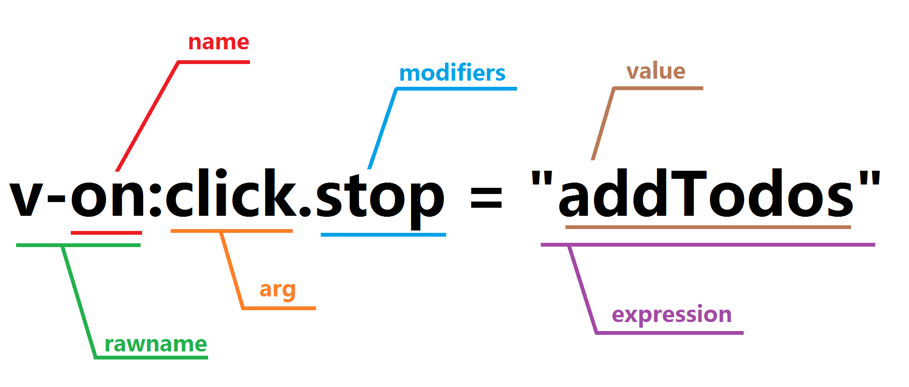
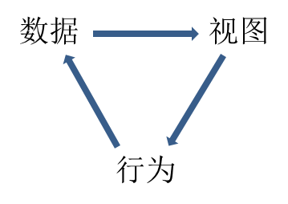
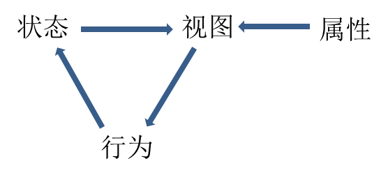
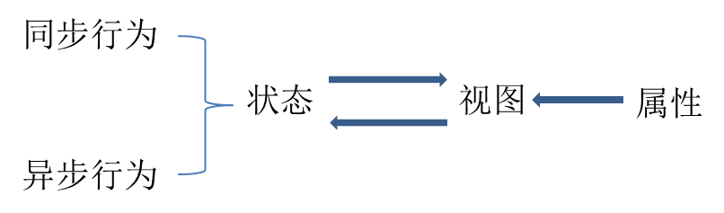
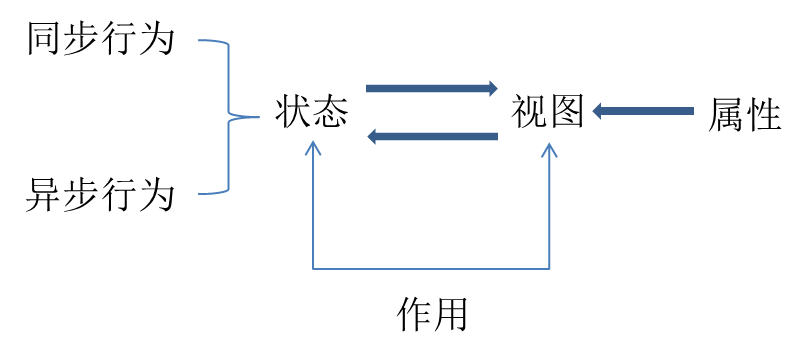
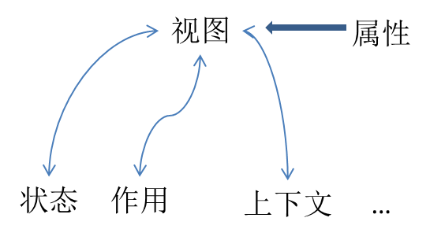

前端知识
注：标题带*为理论，带#为曾经遇到过 BUG
HTML
1. 表格 table 属性
行内样式：
<table
border="1"
cellspacing="0"
cellpadding="0"
width="200"
height="300"
></table>
// cellspacing:设置单元格与单元格边框之间的空白间隙 //
cellpadding:设置单元格内容与边框之间的空白间隙
CSS 样式：
table {
width: 200px;
height: 300px;
border: 1px solid #000;
border-collapse: collapse;
// border-collapse:将边框合并成单一的边框，效果等同于cellspacing
border-spacing: 0;
// border-spacing:可以修改单元格与单元格边框之间的空白间隙，但是如果border-collapse: collapse，是没有效果的
}
th,
td {
border: 1px solid #000;
padding: 0;
// padding:0 就是将cellpadding去掉
}
合并单元格：
合并单元格遵循一个顺序：从上至下，从左往右
rowspan跨行合并 colspan跨列合并，都是行内样式，参数为合并单元格的数量
2. 双伪元素清除浮动
.clearfix::before,
.clearfix::after {
content: "";
display: table;
}
.clearfix::after {
clear: both;
}
/* 兼容 IE 6 7*/
.clearfix {
*zoom: 1;
}
3. 溢出文字
- 盒子需要
overflow:hidden隐藏超出部分； white-space：换行还是一行显示，normal 默认，nowrap 不换行text-overflow：文字溢出，clip 不显示省略号，ellipsis 显示省略号
/*单行溢出*/
.one-txt-cut {
overflow: hidden;
white-space: nowrap;
text-overflow: ellipsis;
}
/*多行溢出*/
.txt-cut {
overflow: hidden;
text-overflow: ellipsis;
display: -webkit-box;
-webkit-line-clamp: 2;
-webkit-box-orient: vertical;
}
4. CSS 画三角形
设置一个盒子，宽高为 0，某个边框设置样式，border 的宽度为三角形的高，其他三个边框，设置成透明色
5. 文字阴影
text-shadow：水平偏移 垂直偏移 模糊度 阴影颜色
可以给一个文字设置多个阴影效果，中间使用逗号连接
6. 盒子阴影
box-shadow：水平阴影 垂直阴影 模糊距离（阴影尺寸） 阴影颜色（内/外阴影）
前面两个属性必须写。默认阴影为外部阴影，想设成内部阴影，设置 inset 属性
7. 响应式布局
根据媒体查询来适配各种屏幕的设备@media(条件)and(条件)...{}
// 定义函数
.adapter(@minWidth) {
@media (min-width: @minWidth) {
html {
font-size: round(@minWidth / 15, 2);
}
}
}
.adapter(320px);
.adapter(360px);
.adapter(375px);
.adapter(384px);
.adapter(400px);
.adapter(414px);
.adapter(424px);
.adapter(480px);
.adapter(540px);
.adapter(720px);
.adapter(750px);
// 函数执行时
@media (min-width: 750px) {
html {
font-size: 750/50px;
}
}
8. rem 布局
rem 布局将 px 像素换成 rem 单位，由 html 的 font-size 去改变 rem 的大小，px = font-size * rem
// jquery
$(function () {
$(window)
.resize(function () {
let width = $(window).width();
width = Math.max(width, 320); // 设置最小宽度
width = Math.min(width, 750); // 设置最大宽度
let fontSize = width / 15;
$("html").css("fontSize", fontSize.toFixed(2) + "px");
})
.resize();
});
9. CSS 实现区域滚动
- 左右分栏区域滚动
容器：position:absolute 不给高度，但利用 top 与 bottom 实现高度，使用display:flex布局
内容：一侧给死宽度，另一侧flex:1。都给overflow-y:scroll
- 横向区域滚动
容器：
.box {
overflow: auto;
overflow-x: auto !important;
overflow-y: hidden;
white-space: nowrap;
}
内容：千万不要使用浮动
.content {
display: inline-block;
}
以上方法不想使用，就动态渲染容器的宽度
10. 新电脑开发准备
下载 node git vsCode
安装 vsCode 插件
Chinese(Simplified)Language：汉化
Auto Rename Tag：修改标签，自动匹配标签闭合
Bracket Pair Colorizer：括号颜色
Easy Less：less 功能
需要配置：设置，右上角打开配置
"less.compile": { "out": "../css/" //less转化成css文件存放位置 }Material Icon Theme：左侧文件图标美化
Open in Browser：设置默认打开文件的浏览器
px2rem：设置 rem
需要配置：设置搜索 rem，修改 font-size
Path Intellisense：智能匹配文件路径
Vetur：vue 支持
react 项目希望 JSX 中，通过 tab 自动生成标签
需要配置：设置，右上角打开配置
"emmet.includeLanguages":{ "vue-html":"html", "javascript":"javascriptreact", "postcss":"css" }, "emmet.triggerExpansionOnTab": true, "emmet.showSuggestionsAsSnippets": true,
JavaScript（原生方法）
1. 修改类名
className：仅仅只是获取与修改类名
classList：对类名进行操作
classList.add(类名); // 添加类名 classList.remove(类名); // 移除类名 classList.contains(类名); // 判断是否包含类名 classList.toggle(); // 切换类名
2. 节点查找
子节点：
childNodes：获取所有的子节点（包括元素节点和其他很多类型的节点，基本不用）
children：获取所有的子元素，兼容性：IE678 会把注释节点算上
firstChild：第一个子节点
firstElementChild：第一个子元素，有兼容性问题 IE678
lastChild：最后一个节点
lastElementChild：最后一个子元素，有兼容性问题 IE678
兄弟节点：
nextSibling：下一个兄弟节点
nextElementSibling：下一个兄弟元素，有兼容性问题 IE678
previousSibling：上一个兄弟节点
previousElementSibling：上一个兄弟元素，有兼容性问题 IE678
父节点：
parentNode
3. 节点操作
添加节点：
parent.appendChild(child)：在父节点后面添加 child
parent.insertBefore(newChild,refChild)：通过父元素在refChild前面添加newChild。如果refChild为null，则在最后面添加，如果refChild为parent.firstElementChild，则在最前面添加"
创建节点：
document.write()：基本不使用，会覆盖原有的页面
innerHTML：会覆盖原有的页面
document.createElement(标签)：在内存中创建需要的标签，然后往标签内添加内容，再使用添加节点的方法，把创建的标签添加到父元素中
删除节点：
parent.removeChild(child)：从父元素中删除 child
替换节点：
parent.replaceChild(newChild,oldChild)：用newChild替换oldChild
克隆节点：
node.cloneNode()：在内存中克隆一个节点。参数为布尔值，true：深克隆，会把标签包括其内容原样克隆，false：浅克隆，只是克隆一个标签">
4. 事件注册
addEventListener(事件类型，事件处理函数，事件是否冒泡)：第三个参数指定事件是否在捕获阶段执行，默认false表示冒泡，true为捕获，优点是可以注册多个事件，不会覆盖
removeEventListener(事件类型，注册事件的函数名)：移除绑定事件
5. 记录鼠标位置
e.screenX ，e.screenY ：相对于屏幕左上角
e.clientX，e.clientY：相对于可视区
e.pageX，e.pageY：相对于 document 页面的左上角（推荐使用）
6. offset 系列
offsetHeight，offsetWidth：获取元素真实的宽高，只读属性，包含width，padding，border
offsetLeft，offsetTop：获取盒子距离最近有定位的父元素的真实距离，只读属性，包含margin
offsetParent：找到离盒子最近的有定位的父元素

7. scroll 系列
scrollWidth，scrollHeight：盒子内容的真实的宽度和高度，与盒子大小无关，仅仅与盒子内容有关
scrollLeft，scrollTop：获取滚动条的距离
onScroll：滚动事件，可以通过注册该事件，用window.pageYOffset获取垂直滚动条滚动距离

8. client 系列
clientWidth，clientHeight：获取内容和 padding 的大小（不包含 border）
clientLeft，clientTop：完全没用

9. onload 入口函数
作用：等待页面加载完成，还会等待图片加载完成
如果想要在结构之前获取 DOM 元素
如果想要获取图片的宽高
window.onload = function () {
// 代码会在窗体加载完成后执行
// 窗体加载完成包括DOM树的加载，图片、文件的加载完成
};
一个页面如果有两个 onload，后者会覆盖前者
10. location 和 history 对象
location.href：页面跳转"
location.reload()：页面刷新
location.search：获取地址栏带的参数？之后的内容
location.hash：获取地址栏的 hash 值#之后的内容
history.go()：参数 1：下一页，参数 0：当前页，参数-1：上一页
history.forward()：前进
history.back()：后退
11. 继承
1. 混入式继承：给对象上添加一个 extend 方法，可以遍历其他对象自身的方法，拷贝到自己身上
extend:function(obj){
for(let k in obj){
// 判断是不是obj自身的属性
if(obj.hasOwnProperty(k)){
this[k] = obj[k]
}
}
}2.原型式继承：
在原型上加属性
Person.prototype =原型替换，把构造函数的原型替换成一个新的对象，此方法新对象里需要有
constructorPerson.prototype = {constructor:Person}混入式继承+原型式继承：将混入式的 extend 放在原型上
Person.prototype.extend = function (obj) { for (let k in obj) { // 判断是不是obj自身的属性 if (obj.hasOwnProperty(k)) { this[k] = obj[k]; } } };
3.经典继承：
var obj = Object.create(proto)：快速让一个对象继承另一个对象，返回值为 obj 新对象，新对象的原型就是 proto
12. call apply 和 bind
// call直接调用
fn.call(this,参数1，参数2)
// apply直接调用
fn.apply(this,[参数1，参数2])
// bind绑定方法，不会立即执行，this执行第一个参数
let newFn = fn.bind(window)
newFn()
13. cookie 设置与删除
设置：服务端是通过
setCookie的响应头来设置cookie的 。前端通过document.cookie获取cookies删除：设置
max-age = -1document.cookies = "a=3;max-age=-1";
14. 实现深拷贝
实现效果
const obj = { a: 2, b: ["1", "2"] };
const objCopy = deepCopy(obj);
obj.a = 1;
console.log("obj", obj); //{a:1,b:['1','2']}
console.log("objCopy", objCopy); //{a:2,b:['1','2']}
function deepCopy(val) {
// 如果val不是object 或者array 返回
if (!isObject(val)) return;
let target = Array.isArray(val) ? [] : {};
for (const key in val) {
if (val.hasOwnProperty(key)) {
if (typeof val[key] === "object") {
target[key] = deepCopy(val[key]);
} else {
target[key] = val[key];
}
}
}
return target;
}
function isObject(val) {
return typeof val === "object" && val !== null;
}
*15. Event Loop 与堆栈
Event Loop：
JavaScript 是单线程的，任务分为同步与异步任务。同步任务会先放到栈里面执行，当同步任务执行完，再开始执行异步任务。异步任务又分为宏任务与微任务，微任务放入微任务序列，宏任务放入宏任务序列。主线程任务执行完成后，会去微任务序列查看是否有任务，有的话，会根据先入先出的顺序将先放进来的微任务放入调用栈中执行，并将任务从微任务序列中移除，执行完后，继续查看微任务序列中是否还有任务，有就执行，没有就查看宏任务序列。宏任务也是根据先入先出的顺序，将先放进去的宏任务放入调用栈中执行，并将该任务从宏任务中移除。执行完后，会去查看微任务序列中是否有任务，有的话就执行微任务。没有的话就查看宏任务序列。
要点：每次宏任务执行完都会去检查微任务序列。
堆栈：
栈是存储基础数据类型的变量以及对象变量的指针，释放的时候是先进后出
堆主要负责类似对象这种变量类型的存储
JQuery
1. 筛选选择器
$('a').children('b')：找到 a 元素中所有子元素中的 b 元素
$('a').find('b')：找到 a 元素所有后代元素中的 b 元素
siblings()：所有的兄弟元素"
next()：下一个兄弟元素，prev()：上一个兄弟元素，parent()：父元素，eq(index)：找下标的元素
2. 操作 prop 方法
prop()：checked、selected、disabled这类布尔值的属性，无法使用attr方法，只能用 prop
3. 自定义动画
$(selector).animate({ params }, [speed], [easing], [callback]);
params：是个对象，包含需要动画的 css 属性与属性值（必填项），speed：动画时长（可选项），easing：动画运动曲线（可选项）默认 swing（缓动），linear（匀速），callback：动画执行完后回调函数（可选项）
4. 节点操作
创造节点：$("<div>this is div</div>")
添加节点：
parent.append(child)/child.appendTo(parent)：把 child 添加到 parent 的子元素最后
parent.prepend(child)/child.prependTo(parent)：把 child 添加到 parent 子元素最前
node.before(node1)：把 node1 添加到 node 前面
node.after(node1)：把 node1 添加到 node 后面
删除节点：
remove()：删除自己
node.empty()：清空节点，把 node 的所有子元素全部清除
克隆节点：
$(selector).clone()：返回值为新的元素，参数为布尔值，true 深克隆，会克隆事件，false 深克隆，不会克隆事件
5. scroll 与 offset 系列
$(window).scrollTop()：获取滚动条的位置
$('html').animate({scrollTop:0},2000)：返回顶部
$(selector).offset()：获取元素距离 document 的位置，返回值为{left:100,top:100}的对象
$(selector).position()：获取相对于最近的有定位的父元素的位置
6. 显式迭代，each 方法
$(selector).each(function (index, element) {
// $(this)为遍历的每一个元素
$(this);
});
7. 多库共存
当 jquery 中的$被其他js文件占用，此时我们无法通过$使用 jquery
var $$ = $.noConflict(); // 释放$的控制权，用$$替代
8. 懒加载 Lazy Load（查文档）
Lazy Load 是一个用 JavaScript 编写的 jQuery 插件。 它可以延迟加载长页面中的图片。 在浏览器可视区域外的图片不会被载入，直到用户将页面滚动到它们所在的位置。在包含很多大图片长页面中延迟加载图片可以加快页面加载速度。 浏览器将会在加载可见图片之后即进入就绪状态。 在某些情况下还可以帮助降低服务器负担。
使用方法：
引入 jQuery.js 和 jquery.lazyload.js
必须改变图片的属性，将图片的 src 属性值放到 data-original 属性。给懒加载图片一个特定的 className（比如 lazy）。图片必须设置宽高
<img
class="lazy"
alt=""
width="640"
height="480"
data-original="img/example.jpg"
/>;
$(function () {
$("img.lazy").lazyload();
});
自定义的参数：
threshold：设置临界点，当图片距离屏幕到达临界点距离时，提前加载，参数为不带单位的数值
event：设置事件来触发加载，默认情况是向下滚动到图片的时候加载，也可以设置其他事件
effect：设置特效，默认是完全加载并调用show()，也可以自己定义显示方式
*9. window.onload 和 document ready 的区别
window.onload是在 dom 文档树加载完和所有文件加载完之后执行一个函数Document.ready原生中没有这个方法，jquery 中有$().ready(function)，在 dom 文档树加载完之后执行一个函数（注意，这里面的文档树加载完不代表全部文件加载完）
$(document).ready要比window.onload先执行
window.onload只能出来一次，$(document).ready可以出现多次
*10. 什么是防抖和节流，他们的应用场景有哪些
防抖：防止某个事件因为用户的误操作，一时间内触发多次。在最后一次操作后执行
场景：登录、发送短信按钮避免用户点击过快，防止多次请求；文本编辑器，实时自动保存，在用户停止操作后执行
let debounceBtn = document.querySelectorAll(".debounce-button")[0];
let throttleBtn = document.querySelectorAll(".throttle-button")[0];
//如果防抖节流执行的函数需要传参
debounceBtn.addEventListener(
"click",
debounce(() => {
handlerClick("防抖");
}, 5000)
);
throttleBtn.addEventListener(
"click",
throttle(() => {
handlerClick("节流");
}, 5000)
);
function handlerClick(str) {
console.log(str);
}
// 防抖
function debounce(fn, wait) {
let timer;
return (...args) => {
const that = this;
clearTimeout(timer);
timer = setTimeout(function () {
fn.call(that, ...args);
}, wait);
};
}
// 节流
function throttle(fn, wait) {
let timer;
let start = 0;
return (...args) => {
let curTime = new Date().getTime();
if (curTime - start > wait) {
fn.call(this);
start = new Date().getTime();
} else {
clearTimeout(timer);
timer = setTimeout(function () {
fn.call(this, ...args);
timer = null;
start = new Date().getTime();
}, wait);
}
};
}
VUE
*1. 对于 MVVM 的理解
MVVM 是 Model-View-ViewModel 的缩写，Model 代表数据层，它仅仅关注数据本身，不关心任何操作行为；View 代表视图层，主要负责展示视图；ViewModel 代表业务逻辑层，View 需要什么数据，ViewModel 就提供这个数据，View 进行了哪些操作，ViewModel 就响应那些操作，这部分是由框架实现，不需要程序员进行开发，就可以自动的实现数据到视图，以及视图到数据的流程。在 vue2.0 的 MVVM 实现中，对 ViewModel 的实现是利用了 ES5 的 Object.defineProperty 方法，当 new Vue 在实例化的时候，首先将 data 方法里返回的对象属性都挂载上 setter 方法，而 setter 方法里将页面上的属性进行绑定，当页面加载的时候哦，浏览器提供的 DOMContentloaded 事件触发后，调用 mounted 挂载函数，开始获取接口数据，获取完成后，给 data 里属性赋值，赋值时触发之前挂载好的 setter 方法，从而引起页面的联动，达到响应式效果。在 Vue3.0 将会使用 Proxy 和 Reflect 来替代 Object.defineProprety 的方式（Proxy 和 Reflect 将在 ES6 的篇章介绍）
*2. Proxy 相比于 defineProperty 的优势
Object.defineProperty 的问题主要有三个：1、不能监听数组的变化；2、必须遍历对象的每个属性；3、必须深层遍历嵌套的对象
而 Proxy 的特点有：1、针对真个对象，而不是对象的某个属性，这样就不需要遍历对象；2、支持数组。Proxy 的第二个参数可以有 13 中拦截方式，比 Object.defineProperty 更加丰富。
3. 常用的 vue 指令
v-model：表单元素属性与数据双向绑定；
v-if，v-show：条件渲染，v-show 它只是 CSS 中的 display 显示隐藏，HTML 元素仍然是存在的，而 v-if 为 false 的时候，页面中是不会有这个 HTML 元素生成；
v-on：绑定事件的，用@代替；
v-text，v-html：类似 js 中 innerText 和 innerHtml；
v-for：列表渲染；
v-bind：动态绑定一个或多个特性，或一个组件 prop 到表达式，可用：替代；
*4. Vue 的双向数据绑定原理
vue 是采用数据劫持结合发布者-订阅者模式的方式，通过 Object.defineProperty 来劫持各个属性的 setter，getter，在数据变化时发布消息给订阅者，触发相应的监听回调。
具体步骤：
需要 Observer 的数据对象进行递归遍历，包括子属性对象的属性，用 Object.defineProperty 都加上 setter 和 getter。这样的话，给这个对象的某个值赋值时，就会触发 setter，那么就能监听到数据的变化。
compile 解析模板指令，将模板中的变量替换成数据，然后初始化渲染页面视图，并将每个指令对应的节点绑定更新函数，添加监听数据的订阅者，一旦数据有变化，收到通知，更新视图。
Watcher 订阅者是 Observer 和 Compile 之间的通信桥梁，主要做的事情是：
1、在自身实例化的时候往属性订阅者里添加自己；
2、自身必须有一个 update 方法；
3、待属性变动 dep.notice 通知时，能调用自身的 update 方法，并触发 compile 中绑定的回调
MVVM 作为数据绑定的入口，整合 Observer、Compile 和 Watcher 三者，通过 Observer 来监听自己 model 数据变化，通过 Compile 来解析编译模板指令，最终利用 Watcher 搭起 Observer 和 Compile 之间的通信桥梁，达到数据变化，视图更新；视图交互变化，数据 model 变化的双向绑定效果
*5. Vue 的生命周期
vue 生命周期表示一个 vue 实例从创建到销毁的过程，这个过程一共分成四个阶段，创建阶段，挂载阶段，更新阶段和销毁阶段。创建阶段在 new vue()的对象中，先执行了 init，对生命周期中的钩子函数与生命周期进行初始化，在 init 的过程中，我们首先可以调用 beforeCreate 这个钩子函数。然后再把 data 数据通过 object.defineProperty 注入 vue 实例中做成响应式数据，完成之后，我们可以调用 created 钩子函数。在数据初始化并注入完成之后，它会去判断 vue 实例中传入的数据是否有 el 属性，如果没有，它会调用 vm.$mount(el)这个方法，再执行下一步，判断是否含有template属性，如果有，它会编译模板，创建一个render函数，如果没有，则把el对应的html代码编译成模板。此时可以调用beforeMount。然后进入挂载阶段，挂载阶段会根据这个模板把我们数据渲染好，渲染完成之后它会创建vm.$el，用这个因创建的元素，把页面的 el 替换，这个时候我们就能看到页面上有数据的 html 元素，此时我们可以调用 mounted。更新阶段是当数据发生更新，vue 监听到数据的变化，重新渲染虚拟 DOM 对页面内容进行更新，这个阶段发生前后我们可以调用 beforeUpdate 和 updated。当 vm.$destory()被调用时，就进入销毁阶段，销毁阶段会将所有和当前 vue 实例相关的资源释放掉。在销毁阶段前后我们可以调用 beforeDestroy 和 destoryed。这个阶段无法自动把定时器延时器以及异步操作的代码释放掉，所以我们需要手动调用 destoryed 这个钩子函数释放。这样一个 vue 实例的生命周期就完成
6. 事件修饰符
.stop：阻止事件冒泡；.self：只有自己可以触发；.prevent：阻止事件默认行为；.once：只触发一次；.capture：阻止事件捕获
7. 按键修饰符，系统修饰键自行百度
8. 向响应式对象中添加一个属性，使属性同样是响应式：Vue.set/vm.$set
Vue.set(target，propertyName/index，value)
参数：target：Object|Array；propertyName/index：string|number；value：any
因为 Vue 无法探测普通的新增属性，所以必须使用这个方法向响应式对象上添加新属性，向响应式对象中添加一个属性，并确保这个新属性同样是响应式的，且触发视图更新
9. 访问更新后的数据：Vue.nextTick/vm.$nextTick
Vue.nextTick([callback，context])
10. 注册或获取全局指令：Vue.directive
Vue.directive(id，[definition])
directive:{}可以局部注册
钩子函数如下：
insert：当当前指令所在的元素被插入到页面时执行；
bind：当 vue 要对当前指令所在的元素进行解析的时候；
update：当当前指令绑定的数据发生变化的时候；
componentUpdate：当数据改变完成，元素更新完毕之后；
unbind：当指令被卸载的时候
在自定义指令中的钩子函数可以获取的相关信息：
name:当前指令名；rowname:带 V 的指令吗；expression:等号后面的表达式；arg:指令参数； modifiers:指令修饰等，这是一个对象，修饰符都会被作为属性存在这个对象中，属性值为 true；value:表达式的值

11. vue 组件通信之父传子
父组件中子组件调用，使用 v-bind 绑定传递的值，子组件中 props 里可以获取
父组件：
<input type="text" v-model="msg" />
<son :msgFromFather="msg"></son>
子组件： export default { props: ["msgFromFather"] };
12. vue 组件通信之子传父
子组件触发某个事件，事件里通过$emit 将父组件上的事件与传递的数据绑定，
父组件中子组件绑定一个事件，这个事件就能拿到传递来的数据
父组件：
<son1 @msgFromSon="msgFromSon" />
methods：{ msgFromSon(msg){ // msg为子组件传递来的数据 } 子组件：某个事件里{
this.$emit('msgFromSon',this.msg) }
13. vue 组件通信之兄弟
入口文件 main.js 创建一个空 vue 实例 bus，同时暴露给 window
兄弟 1，在某个事件中利用 bus.$emit 将传递的数据与事件绑定
兄弟 2，创建阶段，利用 bus.$on 绑定某个事件，事件内拿到传递的数据
main.js: const bus = new Vue({}) window.bus = bus 兄弟1： 某个事件{
bus.$emit('aaa',this.msg) } 兄弟2： created(){ bus.$on('aaa',msg=>{ //
msg为传递的数据 }) }
14. 获取 DOM 元素：$refs
在子组件或者 DOM 元素上加上 ref 属性，属性值为名字，可以通过$refs.名字获取到这个子组件或者 DOM 元素上的数据
*15. vue-router 有哪几种导航守卫
全局守卫
- beforeEach：全局前置守卫，进入路由之前；
- beforeResolve：全局解析守卫，beforeRouterEnter 调用之后；
- afterRouter：全局后置守卫，进入路由之后；
路由独享守卫
如果不想要全局配置守卫，就可以为某些路由单独配置守卫
路由组件内的守卫
主要有三种：beforeRouterEnter、beforeRouterUpdate、beforeRouterLeave。他们直接在路由组件内部进行定义
*16. vue-router 路由的两种模式
- hash 模式：在浏览器中符号“#”，“#”以及“#”后面的字符称之为 hash，用 window.location.hash 读取
- history 模式：history 采用 HTML5 新特性，且提供了两个新方法：pushState()，replaceState()可以对浏览器的历史记录栈进行修改，以及 popState 事件的监听到状态变更，这个模式需要后台配置支持
17. 路由参数的获取
this.$route.query：获取路由？传递参数；
this.$route.params：获取动态路由传递的参数/:id/:name/:age
18. vue-cli 脚手架
安装：npm i -g @vue/cli
创建项目：vue create 项目名
19. v-slot 插槽自行百度
20. prop 类型校验
开发组件供他人使用时，我们给需要的 prop 的值指定类型，避免他人传入错误类型的数据
一般我们看到的 prop 都是以字符串数组形式列出
props:['title','like','isPublished']
指定类型时，以对象形式列出
props:{ title:String, //多个类型 like:[String,Number], //必须的布尔值
isPublished:{ type:Boolean, required:true }, //带默认值 num：{ type:Number,
default:100 } }
21. 当无法使用 v-model，使用.sync 修饰符
使用 v-bind 绑定属性，然后使用.sync 修饰符，也可以实现双向绑定
:msg.sync="msg"
*22. Vue 里面 computed 是什么东西怎么用
在 vue 模板中使用表达式是非常便利的，但设计它的初衷是用来进行简单运算的。在实际开发中在模板里放入过多的表达式会使项目的可维护性大大降低。对于复杂计算的数据，我们就使用计算属性来解决，当计算属性中的值发生变化的时候，计算属性也会更新
*23. Vue 里面的 watch 是什么东西怎么用
实际开发过程中需要一些自定义的监听器，当需要在执行异步或者一些开销比较大的操作中，监听器会比计算属性更加有效
*24. watch 和 computed 的区别
计算属性和监听属性都是希望在依赖数据发生变化的时候，被依赖的数据根据事先设定好的函数发生自动的变换。
watch 我们需要一个数据发生变化的时候进行一些操作时使用
computed 我们需要一个数据，它是由某些数据经过运算得到的
*25. vue 中 keep-alive 组件的作用
主要用于保留组件状态或避免重新渲染，组件切换调用的时候本身会被销毁掉，只要加上 keep-alive 进行包裹，就不会被销毁，而是被缓存起来，下一次使用的时候就会从缓存中快速渲染，而不是重新渲染
*26. vue 组件里面 data 为什么必须是一个函数
- 如果使用的 data 是一个对象，那么每次创建组件实例的时候，都会引用这个 data 对象，所有实例用到的都是同一个，又由于 data 对象是一个引用类型的数据，那么就会导致，一个实例里面对 data 修改，其他实例都会受到影响。
- 如果 data 是个函数，那么在每次创建组件实例的时候，都会调用这个函数，生成一个新的对象，那么所有的对象都有自己独立的 data，互相不影响
27. 过滤器 filter
常用于处理数据，文本格式化。用在双花括号插值和v-bind 表达式用|代替
{{ message | captalize }}
<div v-bind:id="rawId | formatId"></div>
局部注册
filters：{ captalize：function(value){ if(!value) return "" return '123'+value }
}
全局注册
Vue.filter('formatId',function(id){ if(!id) return "" return '2020'+id })
VUEX
*1. Vuex 是什么？怎么使用？哪些功能场景使用它？
Vuex 是专门为 Vue 应用程序开发的状态管理器，采用集中式存储管理应用的所有组件的状态。
state：Vues Store 实例的根状态对象，用于定义共享的状态变量；
action：向 store 发出调用通知，执行本地或者远端的某一个操作；
mutaions：只用于修改 state 中定义的状态变量；
getter：外部程序通过它获取变量的具体值，或者在取值前做一些计算；
使用场景：
- 数据需要在多个组件里面来回调用
- 全局都要使用的方法，并且方法是需要保存不被浏览器清理掉
- 组件需要保存的数据
*2. VueX 页面刷新数据丢失问题怎么解决
- 使用 localStorage 实时保存 vuex 数据
- 使用 vuex-along 插件
3. VueX 的创建
安装：npm i vuex
在 src 文件夹中创建一个 store 文件夹，里面 index.js 文件
import Vue from 'vue' import Vuex from 'vuex' import modules from './modules'
import state from './state' import getters from './getters' import actions from
'./actions' import mutations from './mutations' Vue.use(Vuex) const store = new
Vuex.Store({ modules, state, getters, actions, mutations,
strict:process.env.NODE_ENV !=='production' }) export default store
在 main.js 中引入 store，在 vue 实例中加入 store
4. State
state 用来存储数据的，通过 this.$store.state 获取 vuex 储存的数据
export default({})
5. getters
getters 类似计算属性
const getters = { doneTodos: state=>{ return state.todos.filter(todo=>todo.done)
} } export default getters
getters 可以传参，但因为 getters 已经有一个参数 state 了，所以我们通过返回一个函数来传递参数
const getters={ getTodoById:state=>id=>{ return
state.todos.find(todo=>todo.id===id) } }
6. mutations
处理数据的方法（同步）
页面中通过 this.$store. ('函数名'，参数)来触发对应的 mutations
mutations 中的处理函数有两个参数：第一个 state，第二个为传入的参数
export default{ chang(state,data){ state.data=data } }
7. actions
actions 可以进行异步方法，实际提交的还是 mutations，而不是直接修改状态 state
actions 中接收一个与 store 实例具有相同方法和属性的 context 对象，context.commit('函数名'，参数)
同样的，可以使用 context.state 与 context.getters
页面中通过 this.$store.dispatch('函数名'，参数)
//action.js getDate(context,params)=>{ return new Promise((resolve,reject)=>{
api.getDateApi(params)//请求 .then(res=>{ context.commit('GETDATE',res.body)
resolve(res.body) }) .catch(err=>{ reject() }) }) } //vue中
this.$store.dispatch('getDate',params)
8. modules
Vuex 允许我们将 store 分割成 module，每个模块都有自己的 state，mutations，actions，getters
// 每个模块自己的store // modules里面的index.js import moduleA from './moduleA'
import moduleB from './moduleB' const store = { moduleA, moduleB } export
default store
9. mapState，mapGetters，mapActions，mapMutations
每次组件中调用 state，getters，actions，mutations 都要写一个方法或者属性，然后通过$store 调用，非常麻烦。
//引入 import {mapState，mapGetters，mapActions，mapMutations} from vuex // 调用
computed：{ ...mapState(["数据名称"])， ...mapGetters(["数据名称"]) } methods：{
...mapActions(["方法名"]), ...mapMutations(["方法名"]) }
React
*1. Real Dom 和 Virtual Dom 的区别
Virtual（虚拟）DOM 是对 Real（真实）DOM 的一种模拟，相对于直接操作真实的 DOM 结构，我们构建一棵虚拟 DOM 树，将各种数据和操作直接应用在这棵虚拟 DOM 树上，然后再将虚拟 DOM 树的修改应用到真实 DOM 结构上。
即使我们频繁操作虚拟 DOM，我们只需要一定时刻一次性同步修改到真实 DOM 上，这样减少了 DOM 操作次数，性能上得到了提升。
虚拟 DOM 无法直接更新 HTML，如果元素更新，也只是更新 JSX，而不是创建新的 DOM，所以内存消耗更少。
虚拟 DOM 最大的优点是它不依赖浏览器环境，能在 node 环境实现，可以使用虚拟 DOM 生成 html 字符串，实现 SSR 服务端渲染。
*2. SSR 服务端渲染
SSR 目的是为了解决 SEO 的问题，对于一般的页面来说 SEO 对于页面的影响不是很大，但是对于一些新闻，论坛类网站来说是致命的，因为框架类项目打包生成的页面是没有办法进行 SEO 的，所以他们的关键信息没有办法暴露出来。SSR 的原理就是将框架类型的页面交给后端在服务器来渲染，然后发送到客户端，从而实现 SEO
*3. 什么是 React，React 有什么特点，主要优点
React是由 Facebook 内部的一个 JavaScript 库，用于构建用户界面，React 本质上只关心两件事：1.更新 DOM；2.响应事件。它不处理 ajax、路由和数据储存，所以从 MVC 的角度，它更像是 MVC 中的 V，视图层
React 的特点
- 声明式设计，只需要描述页面的样子，React 负责更新页面。
- React 使用虚拟 DOM，最大限度的减少与 DOM 的交互。可以对虚拟 DOM 多次操作，而只需要一次同步修改到真实 DOM 上，提升性能。
- 它不依赖浏览器环境，能在 node 环境实现，所以可以用在服务器端渲染。
- 通过 React 构建组件，使得代码更加容易复用，能够很好的应用在大项目开发中。
- 遵循单向数据流。
主要优点
- 提高了应用的性能
- 方便在客户端与服务器端使用
- 由于使用了 JSX，代码可读性很好
*4. 什么是 JSX
JSX 本质上就是 JavaScript 中的对象，虽然 JSX 看起来像 HTML，但实际只是一种更加方便的创建模板的方式，底层实际上转化为 React.createElement()来编写声明。当组件渲染时，JSX 会表示成 DOM 节点的抽象描述，并最终转化为实际的 DOM 进行渲染
*5. 你了解 Virtual Dom 吗？解释一下它的工作原理
虚拟 DOM 本质是一个 JavaScript 对象，它最初只是真实 DOM 的副本，它是一个节点树。
工作原理简单的三步：
- 当底层数据发生变化时，重新根据新的数据创建新的虚拟 DOM 树。
- 然后与之前的虚拟 DOM 对象，进行 diff 算法对比，找到之间的差异，得到需要更新的内容。
- 最终根据变化的内容更新真实 DOM。
*6. diff 算法
- 如果两个根元素类型不同，React 会销毁旧树，创建新树。
- 对于类型相同的 React DOM 元素，React 会对比两者的属性是否相同，只更新不同的属性，当处理完这个 DOM 节点，React 会递归处理子节点。
- 在子节点后面添加一个节点，React 对前面的子节点原封不动在它后面创建一个节点，但如果在开始位置插入一个元素，则会删除第一个然后新建一个，第二个不一样又接着删除重建，以此类推。改变每一个不同的节点，而不是复用。
所以 React 提供了一个 key 属性，React 会通过 key 来匹配原始树和后来的树。
*7. 为什么浏览器无法读取 JSX
浏览器只能处理 JavaScript 对象，而不能读取常规 JavaScript 对象中的 JSX。所以为了使浏览器能够读取 JSX，首先需要使用像 babel 这样的 JSX 转换器将 JSX 文件转换成 JavaScript 对象，然后再将其传给浏览器
*8. 解释 React 中 render()的目的
每个 React 组件强制要求必须有一个 render()。它返回一个 React 元素，是原生 DOM 组件的表示。如果需要渲染多个 HTML 元素，则必须将它们组合在一个封闭标签内。此函数必须保持纯净，即必须每次调用时都返回相同的结果。
*9. 什么是 props
props 是一个从外部传进组件的参数，主要作为从父组件向子组件传递数据，它具有只读性和不变性，只能通过外部组件主动传入新的 props 来重新渲染子组件，否则子组件的 props 以及展示形式不会改变
*10. React 中的状态是什么？它是如何使用的
状态 state 主要作用是用于组件保存、控制以及修改自己的状态，它只能在 constructor 中初始化，它是组件的私有属性，不可通过外部访问和修改，只能通过组件内部的 this.setState 来修改，修改 state 属性会导致组件的重新渲染
*11. 调用 setState 之后都发生了什么
在代码中调用 setState 函数之后，React 会将传入的参数对象与组件当前的状态合并，然后触发所谓的调和过程。经过调和过程，React 会以相对高效的方式根据新的状态构建 React 元素树并且着手重新渲染整个 UI 界面。在 React 得到元素树之后，React 会自动计算出新的树与老树的节点差异，然后根据差异对界面进行最小化重渲染。在差异计算算法中，React 能够相对精确地知道哪些位置发生了改变以及应该如何改变，这就是保证了按需求更新，而不是全部重新渲染
*12. React 中什么时候是同步的，什么时候是异步的？
在 React 中，如果是由 React 引起的事件处理（比如通过 onClick 引发的事件处理），调用 setState 不会立即更新 this.state，除此之外的 setState 调用会同步执行 this.state。所谓“除此之外”，指的是绕过 React 通过 addEventListener 直接添加的时间处理函数，还有通过 setTimeout/setInterval 产生的异步调用。
原因：在 React 的 setState 函数实现中，会根据一个变量 isBatchingUpdates 判断是直接更新 this.state 还是放在队列中回头再说，而 isBatchingUpdates 默认是 false，也就表示 setState 会同步更新 this.state，但是，有一个函数 batchedUpdates，这个函数会把 isBatchingUpdates 修改为 true，而当 React 在调用事件处理函数之前就会调用这个 batchedUpdates，造成的后果，就是有 React 控制的事件处理过程 setState 不会同步更新 this.state
*13. React 中的箭头函数是什么？怎么用
箭头函数是 ES6 中的一种用于编写函数表达式的简短语法。箭头函数不会在函数体内重新定义 this 的值，所以在回调中的 this 指向更容易预测。将像 setState 放在处理函数中时，this.setState()的 this 是指向 undefined。此时用箭头函数可以解决这个问题
*14. 有状态组件与无状态组件
有状态组件主要用来定义交互逻辑和业务逻辑，有自己的状态，负责更新；
无状态组件主要用于定义模板，将接收来的数据展示出来
*15. React 组件生命周期的阶段是什么
React 组件的生命周期有三个不同的阶段
挂载阶段：当组件实例被创建并插入 DOM 中时，其生命周期调用顺序
getDefaultProps()：获取实例的默认属性
- getInitialState()：获取每个实例的初始化状态
- constructor()：为生命周期的钩子函数绑定 this
- componentWillMount()：组件即将被挂载、渲染到页面上
- render()：组件在这里生成虚拟的 DOM 节点，这里不能调用 setState，因为每次调用 setState 都会重新渲染
componentDidMount()：组件真正在被挂载之后，仅在第一次渲染后在客户端执行，这个时候我们可以发送网络请求，并进行 DOM 操作
更新阶段：当组件的 props 或 state 发生变化时会触发更新。组件更新的生命周期调用顺序：
componentWillReceiveProps()：组件将要接收到属性的时候调用
- shouldComponentUpdate()：组件接收到新属性或者新状态的时候
- render()：组件重新描绘
componentDidUpdate()：组件已更新时，这个时候我们也可以发送网络请求，并进行 DOM 操作，这里也可以调用 setState 方法，但要做个 if 判断，防止一直更新，调死程序
卸载阶段：当组件从 DOM 中移除时，调用
componentWillUnmount()：组件即将销毁，用于清理内存空间，比如定时器
*16. 详细解释 React 组件的生命周期方法
- componentDidMount()：仅在第一次渲染后在客户端执行，这个时候我们会发送网络请求或者进行 DOM 操作
- shouldComponentUpdate()：根据特定条件返回 true 或 false。如果你希望更新组件，就返回 true
- componentDidUpdate()：在渲染发生后立即调用，这个时候我们会发送网络请求或者进行 DOM 操作
- componentWillUnmount()：从 DOM 卸载组件后调用。用于清理内存空间，比如定时器
17. componentDidUpdate
componentDidUpdate(prevProps,prevState,snapshot){
if(this.props.id !== prevProps.id){
this.fetchData(this.props.id)
}
}
18. shouldComponentUpdate
shouldComponentUpdate(nextProps,nextState){
if(this.props.id !== nextProps.id){
return true
}
return false
}
*19. React 中的合成事件是什么
如果 DOM 上绑定了过多的事件处理函数，整个页面响应以及内存占用可能都会受到影响。React 为了避免这类 DOM 事件滥用，同时屏蔽底层不同浏览器之间的事件系统差异，实现了一个中间层——合成事件
原理：React 并不是将事件绑定在真实 DOM 上，而是在 document 处监听所有支持的事件，当事件发生并冒泡到 document 处时，React 将事件内容封装并交由真正的处理函数运行。React 的事件对象并不是真实的原生事件对象，而是通过合成的方式实现了一个包含原生事件特性的模拟对象，但是可以实现相同的功能
*#20. 你对 React 的 refs 有什么了解
refs 提供了一种方式，允许我们访问 DOM 节点或者在 render 方法中创建的 React 元素
// 创建refs
class MyComponent extends React.Component {
constructor(props) {
super(props);
this.myRef = React.createRef();
}
render() {
return <div ref={this.myRef} />;
}
}
// 访问ref
const node = this.myRef.current;
关于 ref 曾在工作中遇到 bug，当时需要获取到 DOM 元素，想到了 ref 这个方法，满心欢喜的敲下代码后，控制台报错
_WEBPACK_IMPORTED_MODULE_0_recat_default.a.creatRef is not a function
createRef 不是一个方法？苦思冥想，借鉴百度，最后定位到问题是这个方式是 React16.3+才有的，而公司在用的 React 版本还是 16.2.0
于是使用不了这个高大上的方法了，下面是 React16.2.0 使用 ref 的代码
// 创建refs
class MyComponent extends React.Component {
constructor(props) {
super(props);
}
render() {
return <div ref="myRef" />;
}
}
// 访问ref
const node = this.refs.myRef;
网上还有一种 callback 的 ref 形式
// 创建refs
class MyComponent extends React.Component {
constructor(props) {
super(props);
}
render() {
return (
<div
ref={ele => {
this.myRef = ele;
}}
/>
);
}
}
// 访问ref
const node = this.myRef;
refs 与函数组件（自行百度）
*21. 受控组件与非受控组件
受控组件无法维持自己的状态，数据由父组件控制，通过 props 获取当前值，并通过回调通知更改
表单的 value 值存在 state 上
- 表单元素绑定一个 change 事件，通过 e 获取 DOM，修改 state 值
多个表单元素优化
- 每个表单元素定义一个 name 属性
- 所有表单元素的 change 事件指向同一个处理函数
- 处理函数通过 e.target 结果出 name 和 value 属性，this.setState({[name]:value})
如果表单中有复选框，我们需要通过 target.type === 'checkbox'？checked：value
非受控组件保持着自己的状态，数据由 DOM 控制，用 refs 获取当前值
参见 refs
22. React 组件通信之父传子
// 父组件
<Child name={this.state.name} />;
// 子组件
const name = this.props.name;
23. React 组件通信之子传父
// 子组件
class Child extends React.Component {
constructor(props) {
super(props);
this.state = {
msg: "告诉父亲的话"
};
}
handleClick = () => {
this.props.getMsg(this.state.msg);
};
render() {
return <button onClick={this.handleClick}>点我，传数据</button>;
}
}
// 父组件
class Parent extends React.component {
getChildMsg = value => {
// value为子组件传递来的数据
};
render() {
return <Child getMsg={this.getChildMsg} />;
}
}
24. React 组件通信之兄弟通讯
状态提升，子 1 传父父传子 2
25. React 组件通信之 context 跨组件
- 创建 context 并从中解构出 Provider,Consumer
const { Provider, Consumer } = React.createContext();
- 用 Provider 包裹发送数据的组件，并给一个 value 属性
<Provider value = {数据}>
- 用 Consumer 包裹接收数据的组件
<Consumer>{data => <p>{data}</p>}</Consumer>
自行百度，Redux 真香
26. Props 深入
children 属性：获取组件标签的子节点，children 与 props 属性相同，可以为任意值（文本、react 元素、组件甚至是函数）
props 效验：封装公共组件时，约定添加 props 效验
安装：yarn add prop-types
import PropTypes from "prop-types";
class Greeting extends React.Component {
render() {
return <h1>{this.props.name}</h1>;
}
}
Greeting.propTypes = {
name: PropTypes.string.isRequired
};
- props 默认值：通过 defaultProps 定义 props 默认值
Greeting.defaultProps = {
name: "John"
};
27. React-router
安装 yarn add react-router-dom
import {
BrowserRouter as Router,
Switch,
Route,
Link,
Redirect
} from "react-router-dom";
export default function App() {
return (
<Router>
<div>
<ul>
<li>
<Link to="/">Home</Link>
</li>
<li>
<Link to="/about">About</Link>
</li>
<li>
<Link to="/user">Users</Link>
</li>
</ul>
<Switch>
<Route path="/about">
<About />
</Route>
<Route path="/user" Component></Route>
<Route path="/">
<Home />
</Route>
</Switch>
</div>
</Router>
);
}
精确匹配，Route 组件添加 exact 属性
*28. 什么是高阶组件（HOC）
高阶组件是 React 中用于复用组件逻辑的一种技巧，高阶组件的参数为组件，返回值为新组件的函数
*29. 能用 HOC 做什么
- 代码复用，逻辑和引导抽象
- 渲染劫持
- 状态抽象与控制
- Props 控制
具体用法自行百度
*30. 什么是纯组件
React.,PureComponent，与 React.Component 很类似，区别在于纯组件内部自动实现了 shouldComponentUpdate()这个钩子函数。内部通过分别比较前后两次的 props 和 state 值，来决定是否重新渲染组件。纯组件中的 shouldComponentUpdate()仅作对象的浅层比较，但对于引用类型这种复杂的数据结构，只是比较对象引用地址是否相同
31. 创建 React 项目
npx create-react-app 项目名
32. Antd-Mobile 的 bug
动态添加的轮播图不自动播放：原因是需要默认数据才能轮播，轮播图刚挂载的时候没有数据，所以无法自动播放
解决办法：给一个标记，数据加载好之后，标记置为 true，为 true 就挂载轮播图
手动轮播图时，报错：
解决办法：样式中*{touch-action:pan-y}
*33. 了解 React 中的 ErrorBoundary 吗，它有那些使用场景
错误边界，是一种 React 组件，这种组件可以捕获并打印发生在某子组件树任何位置的 javaScript 错误，并且，它会渲染出备用 UI，而不是渲染那些崩溃了的子组件树。
class ErrorBoundary extends React.Component {
constructor(props){
super(props)
this.state = {hasError:false}
}
static getDerivedStateFromError(error){
// 未来可能弃用componentDidCatch，改用这个属性
}
componentDidCatch(error,errorInfo){
// 可以获取error，errorInfo，将错误日志上报到服务器
render(){
if(this.state.hasError){
// 自定义错误后的UI并渲染 return <h1>Something went wrong.</h1>
return this.props.children
}
}
}
}
// 这个组件可以作为常规组件去使用
<ErrorBoundary>
<MyWidget />
</ErrorBoundary>
React Hooks
1. 理解 hooks 的思想
前端通过函数 f 将 data 数据映射到 UI 用户界面就是视图，视图上面一些行为会修改数据

数据可以分为受行为影响的数据也就是状态 state，还是不会变化的数据也就是属性。

状态影射了行为，那我们把行为封装在状态里，视图只是感知状态的变化从而更新视图。

在视图与状态之间还有一些作用，比如
window.location.href，还有埋点，将前端的数据发送到服务端。这些作用不会去改变状态，但它需要上下文 context 去理解状态，然后根据状态去产生作用

函数 V= f(props,state){...}
UI = V usehook1() usehook2()...
*2. 有没有使用过 react hooks，它带来了那些便利
- React 在组件之间复用状态逻辑很难。可能需要使用高阶组件和 render props，但这样需要重新组织组件结果，很麻烦并且会使代码难以理解，还会形成“嵌套地狱”。
- React 中一些状态逻辑和副作用会充斥在整个组件，
componentDidMount和componentDidUpdate常被用来获取数据。但同时componentDidMount会设置一些事件监听或者定时器，之后有需要在componentWillUnmount中清除。相关的代码被进行了拆分，而不相关的代码又在同一个方法中组合到一起。逻辑不是很清晰。 - class 中 this 指向问题。
*3. 如何使用 react hooks 实现一个计数器的组件
import React,{useState,useEffect} from 'react'
function Count (props) {
const [count,setCount] = useState(0)
useEffect(()=>{
const timer = setInterval(()=>{
setCount(count=>count+1)
},1000)
return ()=>{
clearInterval(timer)
}
},[])
return (
<div>{count}</div>
)
}
export default Count
4. useEffect 中如何使用 async/await
useEffect里面无法使用async/awit
转换思想，把async/await的方法封装成一个函数，useEffect里面调用即可
Redux
*1. 核心概念
store，state，action，reducer
store 保险箱记录所有的状态 state
需要改变的时候需要告诉 dispatch 要干什么 action
处理变化的 reducer 拿到 state 和 action 生成新的 state
2. connect()
组件通过 connect 方法自动生成容器组件
import { connect } from 'react-redux'
class List extends React.Component{}
export default connect(
mapStateToProps,
mapDispatchToProps
)(List)3. mapStateToProps()
它是一个函数，建立一个从（外部的）state 对象到（组件的）props 对象的映射关系
const mapStateToProps = (state) =>{
return {
...state.listReducer
}
}这里的 reducer 单独做了个 reducer.js，来管理所有组件的 reducer
import { combineReducer } from 'redux'
import homeReducer from '../container/Home/reducer'
import listReducer from '../container/List/reducer'
export default combineReducer({
homeReducer,
listReducer
})4. mapDispatchToProps()
建立组件的参数到 store.dispatch 方法的映射。它定义了哪些用户的操作应该当做 Action，传给 store
import {bindActionCreators} from 'redux'
import * as action from './action'
const mapDispatchToProps = dispatch => {
return {
Actions:bindActionCreators(action,dispatch)
}
}5. <Provider> 组件
connect 方法生成容器组件以后，需要让容器组件拿到 state 对象，才能生成 UI 组件的参数，React-redux 提供 Provider 组件
import { Provider } from 'react-redux'
import { createStore } from 'redux'
import configureStore from './store'
const store = configureStore()
render(
document.getElementById('root')
)// store.js
import { createStore，applyMiddleware } from 'redux'
import thunkMiddleware from 'redux-thunk'
import rootReducer from '../config/reducer'
const configureStore = (initialState) => createStore(
rootReducer,
initialState,
applyMiddleware(thunkMiddleware)
)
export default configureStore6. action
import request from '../../utils/request'
import {api} from '../../utils/api
import {GET_DATA} from './constant'
export const getData = params => {
return (dispatch,getState)=>{
let _promise =
request('get',api,parmas).promise
_promise.then(res=>{
if(res.resultCode === 10000){
dispatch({
type:GET_DATA,
data:[...res.body]
})
}
}
).catch(err=>{
......
})
}
}7. reducer
import {GET_DATA} from './constant'
const initialState = {
data:[]
}
export default (state= initialState,action)=>{
switch(action.type) {
case 'GET_DATA':
return {
...state,
data：action.data,
type:action.type
};
default:
return {
...state
}
}
}axios
1. 自己封装的请求方式
// env.js 配置环境
const stage = 'stage' // 测试
const prod = 'prod' // 生产
const web = 'web' // h5
const native = 'native'
const env = web
const STAGE_NAME =
const PROD_NAME =
const LOCAL_NAME = 'localhost'
const PREPOINT = window.location.origin
const webAdaptive = () => {
switch(window.location.hostname){
case PROD_NAME:
return: 生产请求地址；
case STAGR_NAME:
case LOCAL_NAME:
default:
return:测试请求地址；
}
}
const prefixAdaptive = env => {
let prefix = ''
switch(env){
case stage:
return prefix = 测试地址
case prod:
return prefix = 生成地址
case web:
return prefix = webAdaptive()
......
}
}
export {env,STAGE_NAME,PROD_NAME,LOCAL_NAME,PREPOINT}
export default prefixAdaptive// request.js
import prefixAdaptive,{env} from '../config/env'
const prefix=prefixAdaptive(env)
Promise.prototype.done = function(onFulfilled,onRejected){
this.then(onFulfilled).catch(function(reason){
setTimeout(()=>{
throw reason
},0)
})
}
const resolveQuery = params => {
let p = '?'
for (let k in params){
if(params.hasOwnProperty(k)){
p+=k+'='+params[k]+'&'
}
}
p = p.slice(0,-1)
return p
}
const request = (type,path,parmas)=>{
let promise = new Promise((resolve,reject)=>{
type =
typeof type ==='string'&&type.toUpperCase()
params = params||{}
let url = path
switch(true){
case type === 'GET':
let query = resolveQuery(params)
url = ${prefix}${url}${query}
break;
case type === 'POST:
url = ${prefix}${url}
break;
}
const execute = ()=>{
const handler = function(){
if(this.readyState !==4) return
if(this.status === 200||this.state ===304){
resolve(this.response)
}else if(this.state === 401){
// 处理401
}else {
// 处理异常
reject()
}
}
let client = new XMLHttpRequest()
client.open(type,url)
client.onreadystatechange = handler
client.responseType = 'json'
// 设置请求头
client.setRequestHeader()
// 设置请求体
client.send(type==='POST'?JSON.stringify(params):null)
}
execute()
})
return {
promise:promise,
}
}
export default request2. axios
import axios from 'axios'
import {prefixAdapter} from '../../config/env'
const API = axois.create({
baseURL:prefixAdapter(),
timeout:5000 // 请求超时时间
})
// 请求拦截器
API.interceptors.request.use(
config=>config,
err=>{
Promise.reject(err)
}
)
// 响应拦截器
API.interceptors.response.use(
res=>res,
err=>{
Promise.reject(err)
}
)
const get = (url,pramas)=>{
axiosInstance.request({
method:'get',
url,
headers:{...}
params
})
.then()
}
const post = (url,data)=>{
axiosInstance.request({
method:'post',
url,
data,
headers:{...}
})
}
export default {get,post,API}3. 反向代理配置
vue 2.x：在 config/index.js 中配置（待验证）
// vue-cli 配置代理的配置参数：
proxyTable：{
// 代理规则
'/api':{
// 代理的目标服务器地址
target:'',
// https请求需要该设置
secure:false,
// 必须设置该项
changeOrigin:true,
// 将'/api'替换成''
pathRewrite:{"^/api":""}
}
}vue 3.0 在 vue-cli 生成的项目根目录中创建一个 vue.config.js（与 package.json 同级）
// https://cli.vuejs.org/zh/config/#devserver-proxy
module.exports = {
// 选项...
// devServer 实际上就是 webpack-dev-server 这个包
devServer: {
// proxy 设置代理的配置项
// 配置文档：https://github.com/chimurai/http-proxy-middleware#proxycontext-config
proxy: {
// '/api' 表示 代理规则
// 在 Vue 组件中使用 axios 发送请求的时候： axios.get('/api/xxx')
// 也就是你的请求地址需要以当前规则（比如：/api）开头，那么，本次请求才会被代理
// 如果某一个接口不需要被代理，就可以直接： axios.get('http://localhost:8080/api/xxx')
// 这样配置后，最终的得到的接口地址为： http://localhost:8080/api/xxx
'/api': {
// 目标服务器地址，也就是接口服务器的真实地址
target: 'http://localhost:8080/',
// 跨域时一般都设置该值 为 true
changeOrigin: true,
// 重写接口路由
pathRewrite: {
'^/api': '' // 这样处理后，最终得到的接口路径为： http://localhost:8080/xxx
}
},
// 其他代理~
'/foo': {
target: ''
}
}
}React：
-
安装 yarn add http-proxy-middleware
在 src 中创建文件：setupProxy.js
const proxy = require('http-proxy-middleware')
module.exports = function(app) {
app.use(
proxy('/api',{
target:'',
changeOrigin:true,
pathRewrite:{
'^/api':''
}
})
)
}4. XMLHttpRequest
//创建一个XMLHttpRequest对象
var xhr = new XMLHttpRequest()
//设置请求行(post方式)
xhr.open('post', 请求地址)
//设置请求行(get方式)请求的地址 需要在url后面拼上参数列表
xhr.open('get',请求地址？参数)
//设置请求头(get方式不需要请求头)
xhr.setRequestHeader(
'Content-Type',
'application/x-www-form-urlencoded'
)
//设置请求体(post方式)
xhr.send('username=' + this.value)
//设置请求体(get方式参数在地址内，所以请求体不需要传参)
xhr.send(null)
//获取响应事件
xhr.onreadystatechange = function () {
// 响应状态为4并且响应成功200
if (xhr.readyState === 4 && xhr.status === 200) {
//响应体
xhr.responseText
}
}5. 文件下载，后端给的是 blob 类型
// 请求省略
// 根据请求头的content-type判断是文件还是错误提示
if (res.headers["content-type"] === "application/octet-stream") {
const blob = new Blob([res.data], {
type: "application/octet-stream"
});
// 获取文件名
const _fileName = res.headers["content-disposition"].split("=")[1];
// 兼容浏览器的下载
try {
if (navigation.msSaveOrOpenBlob) {
navigation.msSaveBlob(blob, _fileName);
} else {
const a = document.createElement("a");
a.href = URL.createObjectURL(blob);
a.download = decodeURIComponent(_fileName);
a.click();
URL.revokeObjectURL(a.href);
a.remove();
}
} catch (error) {
// 当下载方法不支持时，弹窗提示用户浏览器不支持下载，尝试其他浏览器(vue为例)
this.$alert(
`错误信息：your device dose not support files dowloading. Please try again in other browser.`,
"提示",
{
confirmButtonText: "确定",
type: "error"
}
);
}
}
6. 实现一个简单的 promise
实现思路：需要实现下面代码
new myPromise((resolve, reject) => {
resolve(10);
})
.then(res => {
console.log(res); //10
return res * 10;
})
.then(res => {
console.log(res); //100
});
new myPromise((resolve, reject) => {
reject("ERROR");
}).catch(e => {
console.log(e); //ERROR
});
resolve、reject是立即执行的then里面的方法是根据status判断为暂缓执行的resolve，该函数放进任务序列catch里面的方法也是根据status判断为暂缓执行的reject，放进任务序列class myPromise里面就含有任务状态``status`、任务序列queueResolve、queueReject、保存参数的_val、任务_func`status状态为等待PENDING、接受RESOLVE、拒绝REJECTED。默认等待。_val先声明，在resolve、reject中赋值。任务_func接收入参functhen、catch因为可以链式，所以都要return new myPromise((resolve,reject)=>{})。PENDING状态将任务func以及resolve,reject放到任务序列。执行状态，获取结果const result = func(this._val)，return new myPromise()
class myPromise {
constructor(func) {
(this.status = "PENDING"), (this._val = null), (this._func = func);
(this.queueResolve = []), (this.queueReject = []);
const myResolve = val => {
setTimeout(() => {
if (this.status !== "PENDING") return;
this.status = "RESOLVE";
this._val = val;
this.queueResolve.forEach(({ func, resolve, reject }) => {
resolve(func(val));
});
}, 0);
};
const myReject = val => {
setTimeout(() => {
if (this.status !== "PENDING") return;
this.status = "REJECTED";
this._val = val;
this.queueReject.forEach(({ func, resolve, reject }) => {
reject(func(val));
});
}, 0);
};
this._func(myResolve, myReject);
}
then(func) {
if (this.status === "RESOLVE") {
const result = func(this._val);
return new myPromise(resolve => {
resolve(result);
});
}
if (this.status === "PENDING") {
return new myPromise((resolve, reject) => {
this.queueResolve.push({ func, resolve, reject });
});
}
}
catch(func) {
if (this.status === "REJECTED") {
const result = func(this._val);
return new myPromise((resolve, reject) => {
reject(result);
});
}
if (this.status === "PENDING") {
return new myPromise((resolve, reject) => {
this.queueReject.push({ func, resolve, reject });
});
}
}
}
Math，Array，String 的常用方法
1. Math
abs(X)：返回 X 的绝对值
ceil(X)：向上取整；floor(X)：向下取整
round(X)：四舍五入
max(X，Y)：比较最大值；min(X，Y)：比较最小值
random()：随机数，返回 0~1 之间的数，一般需要*数值
2. Array
arr.concat(x,y,z.....)：连接两个或多个数组，参数可为元素或者数组，返回一个新的数组，不改变原数组
arr.join(x)：将数组拼成字符串，参数为分隔符
arr.pop()：删除数组的最后一个元素，返回删除后的数组，不改变原数组
arr.shift()：删除数组的第一个元素，返回第一个元素，改变原数组
arr.push(x,y,z......)：向数组的末尾添加一个或多个元素，返回添加后的数组长度，改变原数组
arr.unshift(x,y,z......)：向数组的开头添加一个或多个元素，返回添加后的数组长度，改变原数组
arr.reverse()：颠倒数组，改变原数组
arr.sort(x)：排序数组，参数为排序的函数，不传会有默认排序按字母顺序，改变原数组
arr.slice(start,end)：从数组中截取元素，
参数：start，必需，从何处开始截取，负数从尾部开始截
end，在何处结束，不写，则截取数组结束的全部元素
返回一个由截取下来的元素组成的新数组，不改变原数组
arr.splice(index,howmany,item1,....itemx)：在数组的某个位置添加/删除元素
参数：index，必需，添加/删除元素的位置，负数从尾部开始
howmany，必需，删除元素数量，为 0，不删除
item1,...itemx，可选，向数组中添加新的元素
返回值：被删除项目的新数组，如果有的话。改变原数组
arr.indexOf(x)：查找某个元素在数组中第一次出现的位置，返回值为下标，为-1 说明不存在
arr.lastIndexOf()：查找某个元素在数组最后一次出现的位置，返回值为下标，为-1 说明不存在
3. String
string.trim()：删除字符串两边的空格
string.toUpperCase()：大写 string.toLowerCase()：小写
string.slice(start,end)：提取字符串的某一部分，包含 start，不包含 end
参数：下标，为负数，从尾部开始
返回一个新的字符串为截取部分
string.substring(start,end)：提取两个下标之间的字符，包含 start，不包含 end
参数：start，必需，非负整数。end，可选，非负整数
返回一个新的字符串
string.substr(start,length)：截取 start 下标开始指定数目的字符
参数：start，必需，为负数，从尾部开始，length，可选，数值
返回一个新的字符串，从 string 的 start 处开始 length 个长度的字符串
string.split(separator,howmany)：将字符串分割成数组
参数：separator，必需，字符串或者正则表达式。
howmany：可选，返回数组的最大长度
返回一个新的数组
string.replace(regexp/substr,replacement)：用一些字符替换字符串中另一些字符
参数：regexp/substr，必需，检索的对象，字符串/正则表达式
replacement，必需，替换的文本
返回替换后的新的字符串
flex 布局（真香布局）
1. display:flex
盒子设置了 display：flex 之后，这个盒子就有了主轴和侧轴的概念，子元素默认在主轴开始的位置排列
2. flex-direction
修改主轴的方向
参数：row：默认值，水平向右；row-reverse：水平向左；column：垂直向下；column-reverse：垂直向上
真香布局：
- 当我们需要竖向排列盒子时，设置成 column。
- 实现头部底部固定定位，中间盒子展示内容。可以使用 flex-direction:column 代替头部底部的固定定位（曾遇到过 iPhone 在使用 flex 布局与底部固定定位时的 BUG。然后用 flex 布局代替固定定位）
3. justify-content
设置子元素在主轴上的排列方式
参数：flex-start：默认，在主轴开始的位置排列；flex-end：在主轴结尾的位置排列；center：在中间排列；space-around：盒子均分排布，带左右空隙；space-between：盒子均分排布，左右贴边
真香布局：space-between space-around 谁用谁知道
4. align-items
设置侧轴的排列方式（单行）
参数：flex-start：在侧轴顶部的位置排列（贴着顶部）； flex-end：在侧轴底部的位置排列（贴着底部）； center：中间；stretch：子盒子没有高度时默认拉伸（上下）
真香布局：垂直居中 使用 center
5. flex-wrap
设置子元素是否换行
参数：nowrap 不换行 wrap 换行
真香布局：正常都是不换行，但是换行可以实现 n 宫格。子元素给好宽度比
6. align-content
设置子元素在侧轴的排列方式（多行）
参数：flex-start：默认，在侧轴开始的位置排列；flex-end：在侧轴结尾的位置排列；center：在中间排列；space-around：盒子均分排布，带上下空隙；space-between：盒子均分排布，上下贴边；stretch：拉伸，不设置高度的情况下
用的少
7. flex
子元素设置的，分配在主轴的空间 参数为数字
8. order
子元素设置的，排列顺序，默认 0，数值越小，顺序越靠前
9. align-self
子元素设置的，设置单个子元素在侧轴的排列方式
参数：flex-start：在侧轴顶部的位置排列（贴着顶部）； flex-end：在侧轴底部的位置排列（贴着底部）； center：中间；stretch：子盒子没有高度时默认拉伸（上下）
git
1. 常用指令
git config --global user.name+作者名
git config --global user.email+邮箱
每台电脑执行一次，设置
git add：git 管理文件
git commit -m "描述"：将提交内容生成版本存到库中
git commit --amend：修改 commit 描述，英文输入法下 i 进入编辑，编辑好后 esc 保存，：q 确定（：wq！强制确定）
git fetch --all
git pull --rebase origin 分支
git push
git status：查看当前项目状态
2. 回滚版本
git log：查看以往提交版本信息
git reflog：查看所有日志
git reset --hard 版本号：回滚到指定版本
3. git 查看 diff 不同
git diff：工作区与暂存区不同
git diff -cache：暂存区与库存区的不同
git diff HEAD：工作区与库存区的不同
git diff 版本号 1 版本号 2：两个版本之间的不同
4. git 分支
git branch：查看分支信息
git checkout 分支名：切换分支
git checkout -b 分支名：新建并切换到新分支
git merge 分支 B：在分支 A 上把分支 B 合并过来
git branch -d 分支名：删除分支
5. git 与远程仓库
git clone：克隆代码
git remote add 别名 仓库地址：用别名替代仓库地址
git remote：查看所有别名
git remote get-url 别名：获取别名的仓库地址
git remote set-url 别名 仓库地址：仓库地址设置别名
6. git 忽略文件
开发项目的时候我们可能有些文件、文件夹不需要 git 管理。在 git add 之前，新建一个.gitignore 文件，在.gitignore 文件里写不需要 git 管理的文件，文件夹名
Webpack
1. 介绍
webpack 模块化打包工具
安装：npm i webpack webpack-cli -D
在package.json中添加scripts，以以下两种方式
"scripts":{ "build":"webpack index.js -o ./dist/bundle.js" }"scripts":{ "build":"webpack" } // 还需要在根目录下创建webpack.config.js
2. webpack 常规配置
module.exports = {
mode: "development",
// entry入口文件
entry: path.join(_dirname, "./src/main.js"),
// output输出文件
output: {
path: path.join(_dirname, "dist"),
filename: "handler.js"
},
// module规则
module: {
rules: []
},
// plugins插件
plugins: []
};
3. 不同文件配置 loader
webpack 只认识 js，默认也只对 js 进行打包，对于 css、图片、字体图标、vue 文件都不认识，所以需要配置对应的 loader（需要安装），在 module 的 rules。具体配置
rules: [
{
test: /\.less$/,
use: [
{
// creates style nodes from JS string
loader: "style-loader"
},
{
// translates css into commonJS
loader: "css-loader"
},
{
// compiles Less to css
loader: "less-loader"
}
]
},
{
test: /\.vue$/,
loader: "vue-loader"
},
{
// 用来匹配文件名称的
test: /\.js$/,
use: {
loader: "babel-loader",
options: {
presets: ["@babel/preset-env"]
}
}
}
];
4. plugins 插件
VueLoaderPlugin：vue 打包必须的插件
const VueLoaderPlugin = require("vue-loader/lib/plugin");webpack 打包时 dist 文件中没有 HTML 文件：此时需要使用
html-webpack-plugin可以自动生成 htmlconst HtmlWebpackPlugin = require("html-webpack-plugin");打包时需要自动删除之前的 dist 文件夹新建：使用
clean-webpack-pluginconst { CleanWebpackPlugin } = require("clean-webpack-plugin");
plugins: [
// 确保引入了插件
new CleanWebpackPlugin(),
new HtmlWebpackPlugin({
template: path.join(_dirname, "./src/index.html")
}),
new VueLoaderPlugin()
];
5. webpack-dev-server
安装：npm install --save-dev webpack-dev-server
作用：自动启动 http 服务，自动打开浏览器，自动监听文件的变化，每次修改代码，都会重新打包（在临时文件夹）所以还需要 build 打包
// 与plugins同级
devServer: {
// 打包输出的文件夹名
contentBase: './dist',
// 运行的端口
port: 9999,
// 是否自动打开浏览器
open: true
}
前端面试题
*1. 前端优化的方案有哪些
可以百度雅虎 14 条性能优化原则，下面回答仅仅只是本人能理解，会使用的
- 减少 HTTP 请求次数：CSS Sprites,JS、CSS 源码压缩，图片大小控制适合；CDN 托管，data 缓存，图片服务器
- 前端模板 JS+数据，减少由 HTML 标签导致的带宽浪费，前端用变量保存 ajax 请求结果，每次操作本地变量，不同请求，减少请求次数
- 用 innerHTML 代替 DOM 操作，减少 DOM 操作次数，优化 javascript 性能
- 当需要设置的样式很多时，设置 className 而不是直接操作 style
- 少用全局变量、缓存 DOM 节点查找的结果。减少 IO 读取操作
- 避免使用 CSS Expression（CSS 表达式）
- 图片预加载，将样式表放在顶部，将脚本放在底部 加上时间戳
- 避免在页面的主体布局中使用 table，table 要等其中的内容完全下载之后才会显示出来，显示比 div+CSS 布局慢
*2. CSS 选择器（符）有哪些，优先级算法如何计算
通配符选择器*，类名选择器.，id 选择器#，标签选择器、后代选择器 div p，子代选择器div>p，交集选择器div.p，并集选择器div,p，伪类选择器:，属性选择器[]，伪元素选择器::，结构伪类选择器:first-child
优先级：!important>[id>class>tag]
*3. 盒子模型
标准盒子模型：margin、border、padding、content
IE 盒子模型：margin、content（border、padding）
*4. 尽可能完整的描述从输入 URL 到整个网页加载完毕及显示在屏幕上的整个流程
- 输入 URL
- 浏览器获取 URL，通过 DNS 解析获得网址对应的 IP 地址。首先先去各个缓存当中看看有没有 DNS 缓存，如果有则直接显示，不需要重新发送 HTTP 请求
- 如果没有浏览器就会向服务器发送一个 HTTP 请求
- 服务器处理请求并返回一个 HTTP 响应报文
- 浏览器收到响应后，进行客户端渲染，生成 DOM 树，CSS 树，执行 JS 交互
- 浏览器绘制页面
*5. 描述 cookies，sessionStorage 和 localStroage 区别
cookies：周期时间前后端都可以设置，大小不超过 4k，cookies 的数据会自动传递到服务器，服务器也可以写 cookies 到客户端
sessionStorage：页面关闭就会清理，大小达到 5M 或更大，不会自动把数据发给服务端，仅在本地保存
localStorage：存储持久数据，除非主动删除数据否则数据一直存储，大小也达到 5M 或更大，也不会自动把数据发给服务器，仅在本地保存
*6. 冒泡排序
// 降序
function sort(arr) {
for (var i = 0; i < arr.length - 1; i++) {
var flag = true;
for (var j = 0; j < arr.length - 1 - i; j++) {
if (arr[j] < arr[j + 1]) {
var temp = arr[j];
arr[j] = arr[j + 1];
arr[j + 1] = temp;
flag = false;
}
}
if (flag === true) {
break;
}
}
return arr;
}
*7. 如何解决跨域问题
JSONP：使用 script 标签向后端请求数据，只适合 get 请求
CORS：让服务端设置Response Header响应头中的Access-Control-Allow-Origin为对应的域名 ，这样浏览器就不会报跨域错误，但出于安全性考虑尽量不要使用*
反向代理：搭建一个自己的服务器，让我的服务器请求数据，拿到数据之后再返回给自己
实际开发中：
- 只有本地调用测试环境可能会跨域，我们只需要设置浏览器就可以解决跨域问题
// 在浏览器快捷方式的目标
"C:\Program Files (x86)\chrome.exe"
// 后面加上
--disable-web-security --user-data-dir=D:\MyChromeDevUserData
- 进行 webpack 的反向代理配置
实际生产中：
nginx 配置
*8. 什么是 BFC
块级格式化上下文，具有 BFC 特性的元素可以看做是隔离了的单独容器，容器里面的元素不会在布局上影响到外面的元素，也不会受到外面元素的影响。
只要元素满足下面任一条件即可触发 BFC 特性
- body 根元素
- 浮动元素
- position 为 absolute 或 fixed
- display 为 inline-block，table-cell，table-caption，flex，inline-flex
- overflow 不为 visible
*9. CSS 去掉 iPhone，iPad 默认按钮样式
input[type="button"],
input[type="submit"],
input[type="reset"] {
-webkit-appearance: none;
}
textarea {
-webkit-appearance: none;
}
*10. javascript 是一门怎么样的语言，它有哪些特点
JavaScript 是一种直译式脚本语言，是一种动态类型、弱类型、基于原型的语言，广泛用于客户端的脚步语言，最早是在 HTML 网页上使用，用来给 HTML 网页增加动态功能。
JavaScript 兼容于 ECMA 标准，因此也称为 ECMAScript。
基本特点
- 是一种解释性脚本语言（代码不进行预编译）
- 主要用来向 HTML 页面添加交互行为
- 可以直接嵌入 HTML 页面，但写成单独的 js 文件有利于结构和行为的分离
- 跨平台特性，在绝大多数浏览器的支持下，可以在多种平台下运行
*11. 构造函数中 new 做了四件事
- 创建一个新的对象
- 把 this 指向新对象
- 执行构造函数
- 返回新对象
*12. 原型，原型链是什么，原型链的应用
每个函数创建的时候都会有一个自带的属性，这个属性指向一个对象，这个对象就是原型。
每个构造函数所创建出来的实例都可以调用这个原型上的属性和方法。
原型本身也是一个对象，这个对象就是 Object 的实例，所以原型也可以调用到 Object 的原型，这样就组成一个链式结构，这个就是原型链
原型链是实现继承的主要方法
*13. 什么是内存泄漏，哪些操作会造成内存泄漏
内存泄漏是指一块被分配的内存既不被使用，也不被回收，直到浏览器进程结束。
造成内存泄漏的操作：
- 全局变量引用的内存泄漏
- 闭包引起的内存泄漏
- DOM 清空或者删除时，事件未清除导致的内存泄漏
- 被遗忘的计时器或回调函数
*14. 实现一个函数 clone，可以对 5 种主要的数据类型进行值复制
function clone(obj) {
let o;
switch (typeof obj) {
case "undefined":
break;
case "number":
o = +obj;
break;
case "string":
o = obj + "";
break;
case "boolean":
o = !!obj;
break;
case "object":
if (obj === null) {
o = null;
} else {
o = Array.isArray(obj) ? [] : {};
for (let key in obj) {
o[key] = typeof obj[key] === "object" ? clone(obj[key]) : obj[key];
}
}
break;
}
return o;
}
*15. HTTP 状态码定义
1 开头：消息
2 开头：成功 200-请求已成功，请求所希望的响应头或数据体将随此响应返回。出现此状态码是表示正常状态
3 开头：重定向
4 开头：请求错误 400-1、语义有误，当前请求无法被服务器理解。除非进行修改，否则客户端不应该重复提交这个请求。2、请求参数有误。
401-当前请求需要用户验证
403-服务器已经理解请求，但是拒绝执行它。
404-请求失败，请求所希望得到的资源未被在服务器上发现。
5 开头：服务器错误 500-服务器遇到了一个未曾预料的状况，导致了它无法完成对请求的处理。 详见https://www.cnblogs.com/liaoshiyong/p/3150839.html
Node.js
1. node 版本管理器（NVM）
nvm（Linux、Unix、OS X）
常用命令：
- nvm install node ：安装最新 node.js
- nvm use node：使用指定版本 node.js
nvm-windows
常用命令：
- nvm version：查看 nvm 是否安装成功
- nvm install latest：下载最新版本 node.js
- nvm install 版本号：下载指定版本 node.js
- nvm uninstall 版本号：卸载指定版本 node.js
- nvm list：查看电脑上安装的所有 node.js 版本
- nvm use 版本号：使用指定版本 node.js
2. 文件读写
fs 模块 const fs = require('fs')
fs.writeFile(file,data[,options],callback)fs.readFile(filre[,options],callback)
file 是文件路径
options 可以为文件编码，具体看文档
文件路径方式：
相对路径
__dirname：当前文件路径__filename缺点：window 与 Linux、苹果操作系统，拼接路径的'\'不同，无法统一
path 模块：
const path = require("path"); let filename = path.join([...paths]);
3. 创建目录
创建一个文件夹
const fs = require("fs");
fs.mkdir("./test-mkdir", callback);
4. http 模块
const http = require("http");
const server = http.createServer();
// 监听用户请求事件
// request对象包含用户请求报文，可以获取所有用户提交过来的数据
// response对象向用户响应一些数据
server.on("request", function (request, response) {
//request.url可以获取到用户不同请求
console.log(request.url);
// 解决乱码，响应报文头，告诉浏览器使用对应的编码来解析网页
response.setHeader("Content-Type", "text/html;charset=utf8");
response.write("Hellp world！！");
// 必须结束响应，否则浏览器一直等待响应
response.end();
});
// 启动服务
server.listen(8080, function () {
// 启动服务时的回调
});
5. 读取 html 页面响应不同 request
const http = require('http')
const fs = require('fs')
const path = require('path')
http.createServer(function(req,res){
if(req.url === '/'|| req.url === '/index'){
fs.readFile(path.join(__dirname,'htmls','index.html'),function(err,data){
if(err){
throw err
}
res.end(data)
})
}else if(req.url === 'login'){
...
}else{
...
}
}).linsten(8080,function(){})
静态资源，图片，css 也需要这样判断
6. 更简单的静态资源处理方法
根据req.url拼接文件路径，来访问静态资源
mine模块根据不同的资源返回对应的 content-type
npm i mine
// 静态资源存放在public文件夹内
// public文件夹完整路径
let publicDir = path.join(__dirname, "public");
// 静态资源与public文件夹路径拼接出完整的文件路径
let filename = path.join(publicDir, req.url);
// 读取文件路径，读取到返回文件，读取错误返回404
fs.readFile(filename, function (err, data) {
if (err) {
res.end("404");
} else {
// 引入mine模块
res.setHeader("Content-Type", mine.getType(filename));
res.end(data);
}
});
url 就是一个标识，不一定是请求的文件（比如 index.do 也可以返回 index.html）
7. request，response 常用 API
文档中 request 对象是 http.IncomingMessage，response 对象是 http.ServerResponse
request 对象常用 API
request.headers：获取所有请求报文头（输出对象）request.rawHeaders：获取所有请求报文头（输出数组，值为字符串）request.httpVersion：请求客户端 http 使用版本request.method：客户端请求方法request.url
response 对象常用 API
response.write()response.end()：每次请求都必须调用。通知服务器，所有响应头和响应主体都已经被发送response.setHeader()：设置报文响应头response.statusCode：设置 http 响应状态码response.statusMessage：设置 http 响应状态码对应的消息response.writeHead()：写入 http 报文响应头res.writeHead(404, "Not Found", { "Content-Type": "text/plain;charset=utf-8" });
8. 第一次读取文件的处理
fs.readFile("data.json", "utf8", function (err, data) {
// 第一次访问文件，文件不存在，会报错
// 但这种错误并不是网站出错，不需要抛出异常
if (err && err.code !== "ENOENT") {
throw err;
}
let list = JSON.parse(data || "[]");
});
9. POST 提交数据时的处理
post 提交数据，会分多次进行提交，每次提交一部分数据。所以需要监听 request 对象的 data 事件，接收数据。监听 request 的 end 事件被触发，说明所有数据都已经提交到服务器
// 引入将post请求数据对象转成JSON对象
const querystring = require('quertstring')
......
let array =[]
req.on('data',function(chunk){
array.push(chunk)
})
req.on('end',function(err,data){
let postBody = Buffer.concat(array)
postBody = querystring.parse(postBody.toString('utf8'))
......
})
......
10. 服务器端模板引擎渲染
1. underscore 模块
npm i underscore
let _ = require('underscore')
zip/unzip：
let temp = _.zip(["a", "b", "c"], ["1", "2", "3"]); // temp [{'a','1'},{'b','2'},{'c','3'}]template：模板
let temhtml = "<h2><%= name %></h2>"; let fn = _.template(temhtml); let html = fn({ name: "张三" }); // html <h2>张三</h2>
实际应用
fs.readFile('data.json','utf8',function(err,data){
...
let list = JSON.pares(data||'[]')
// 封装了render方法
res.render('./index.html',{list})
})
// render方法
res.render = function (html,tempdata){
fs.readFile(html,function(err,data){
if(tempdata){
let fn = _.template(data.toString('utf8'))
data = fn(tempdata)
}
res.end(data)
})
}
微信小程序
1. 注册与获取 APPID
开发-开发设置 获取 AppId
2. 数据绑定
// js文件
Page({
data:{
msg:'数据'
}
})
// wxml文件
<text>{{msg}}</text>
- 小程序中插值表达式 可以用在属性中
- 小程序中插值表达式不支持方法调用
- 小程序中数据绑定是单向的
无法直接修改 data 中的数据，来将数据的变化显示在页面中
使用 this.setData({})修改数据
// 事件中
this.setData({
msg:'修改后的数据'
})
// input
bindInput事件，使用e获取input的value值
3. 事件绑定
小程序中有自己独立提供的一套事件绑定机制
两种事件绑定方式：
- bind 冒泡事件
- catch 非冒泡事件
// js文件
Page({
data:{},
handlerClick(){
}
})
// wxml文件
<button bindtap='handlerClick'>冒泡点击</button>
<button catchtap='handlerClick'>非冒泡点击</button>
给事件传递参数：通过自定义属性传递，事件里通过事件对象获取
<button bindtap="handlerClick" data-id="666">冒泡点击</button>
事件内使用参数通过 e.target.dataset 解构出参数
Page({
handlerClick(e) {
const { id } = e.target.dataset;
}
});
4. 条件渲染
条件渲染 wx:if
wx:if="数据" 数据为 true 展示元素，否则隐藏。隐藏元素时，直接将这个结构删除
wx:elif 相当于 else if
wx:else 相当于 else
条件渲染 hidden
给标签 hidden 属 性，属性值为 true 隐藏，false 显示。
同时控制多个元素展示和隐藏
使用 block 组件，类似于幽灵节点，不会生成标签在 wxml 结构中
<block wx:if="{{isshow}}">
<button></button>
<button></button>
<button></button>
<button></button>
</block>
5. 列表渲染
wx:for="{{列表数据}}"
使用时，应该提供 wx:key，值为唯一属性名称
<view wx:for="{{todos}}" wx:key="id">{{index}}-->{{item.name}}</view>
修改默认的 index 和 item
<view wx:for="{{todos}}" wx:key="id" wx:for-item="it" wx:for-index="i">
{{i}}-->{{it.name}}
</view>
如果列表数据为纯字符串或者数值的数组，遍历时，可以使用*this 作为 key 值。item 作为展示的数据
// todos ['1','2','3'] <text wx:for="{{todos}}" wx:key="*this">{{item}}</text>
6. WXSS
与 css 差不多，但做了一些扩展
尺寸单位
rpx ：自适应的尺寸单位，屏幕宽度固定为 750rpx
毛刺问题：50%计算与写死数值，会有一像素差
样式导入
@import 相对路径
7. 发起请求
wx.request({
url: "",
data: {}, // 请求参数，string，object，array
header: {}, //设置请求头，不能设置Referer
method: "", // 请求方式 GET POST 大写
success(res) {}, // 成功的回调
fail: () => {}, // 失败的回调(箭头函数形式解决this指向问题)
complete() {} // 请求完成时执行的回调
});
为了安全性考虑，小程序只允许请求自己网站的接口数据
如何解决接口无法访问的问题？
- 可以在https://mp.weixin.qq.com/ 开发-开发设置-服务器域名 设置服务器信息。但每个月有修改限制次数。还需要重新登录微信开发者工具
- 直接在开发者工具中，在右上角详情-本地配置，勾选：不效验非合法域名（仅限临时开发，上线时仍需配置合法域名）
注意请求中 this 指向问题
8. 生命周期钩子函数
onLoad：进入页面就会执行，此时可以发送请求获取数据。参数 options 可以拿到 url 里的参数 onLoad:function(options){}
- onLoad 与 onShow
onLoad 只有第一次进入页面的时候才会执行，onShow 每次进入页面都会执行
tabBar 页面从来都没有关闭，所以再次进入 tabBar 页面的时候，不会触发 onLoad
- onHide
页面隐藏或切入后台时调用
9. 项目初始化
项目开始先配置 app.json
// app.json
{
"pages":[
"pages/index/index",
"pages/message/message",
"pages/profile/profile"
],
"window":{
// 顶部背景色
"navigationBarBackgroundColor": "#daa520",
// 顶部标题
"navigationBarTitleText": "本地生活",
},
"tabBar": {
"list": [
// 只有list里面配置的页面，才会在有tabBar的页面显示
{
"pagePath": "pages/index/index",
"text": "首页",
"iconPath": "/assets/tabs/home.png",
"selectedIconPath": "/assets/tabs/home-active.png"
},
{
"pagePath": "pages/message/message",
"text": "消息",
"iconPath": "/assets/tabs/message.png",
"selectedIconPath": "/assets/tabs/message-active.png"
},
{
"pagePath": "pages/profile/profile",
"text": "我的",
"iconPath": "/assets/tabs/profile.png",
"selectedIconPath": "/assets/tabs/profile-active.png"
}
]
},
}
10. 自定义编译
通过自定义编译修改启动页面，可以使每次编译后打开的页面不再是首页。
11. 页面事件函数
onReachBottom：页面上拉触底事件的处理函数
生命周期钩子函数及页面事件函数见文档 框架-框架接口-页面-Page
12. WXS 模块
在 wxml 中有些渲染数据需要修改后使用，但插值表达式不支持函数调用。于是我们可以在 wxml 文件中添加 <wxs>标签，或者使用.wxs 文件。来引入函数，修改数据。通过 module.exports 实现
wxs 模块不支持 ES6 语法
// 数据date:2020.01.09变成2020-01-09 // wxml文件
<text>{{ tools.replaceDate(date) }}</text>
<wxs module="tools">
var replaceDate = function(date){
return date.replace('.','-')
}
module.exports = {
replaceDate:replaceDate
}
</wxs>
// 或者 // wxs文件 var replaceDate = function(date){ return
date.replace('.','-') } module.exports = { replaceDate:replaceDate } // wxml文件
<wxs src="../../tools.wxs" module="tools" />
<text>{{ tools.replaceDate(date) }}</text>
wxs 文件要引入其他 wxs 文件模块，使用 require 函数，必须相对路径
13. WeUI
给微信网页版及小程序提供的 UI 组件库
小程序官网-扩展功能-WeUI 组件库 具体的查看文档
14. WePY
小程序组件开发框架，还有类似的美团 mpvue
1. 开始项目
1 全局安装 cli：
2.x：
npm install @wepy/cli -g1.x：
npm i -g wepy-cliwepy --version查看版本信息全局安装 CLI 会覆盖老版本的 CLI 工具，新版本的 CLI 无法编译老版本的代码。因此，如果需要同时维护 WePY 1.7.x 和 WePY 2.0.x 的开发者，应当考虑在当前项目安装 CLI，而非全局安装。可以直接使用 1.7.x 的 CLI 去初始化 2.0.x 的项目，如下：
$ wepy init standard#2.0.x myproj2 通过脚手架初始化项目：
wepy init empty my-project这样是一个空模板初始化项目时报错： wepy-cli Failed to download repo empty: getaddrinfo ENOENT raw.githubsercontent.com raw.githubsercontent.com:443 原因：raw.githubsercontent.com无法访问 解决办法：修改Hosts临时解决GitHub的raw.githubusercontent.com无法链接 1.通过IPAddress.com首页,输入raw.githubusercontent.com查询到真实IP地址 2.C:\Windows\System32\drivers\etc hosts文件 添加 以下内容并保存即可恢复 查询到的IP地址 raw.githubusercontent.comwepy2.x发送请求报错，未找到解决办法，故放弃2.x使用3 下载依赖项
npm i4 启动项目，并开启实时编译
wepybuild--watch或npm run dev5 在微信开发者工具中 打开
dist目录6 在微信开发者工具中配置：
- 关闭：ES6 转 ES5
- 关闭：上传代码时样式自动补全
- 关闭：代码压缩上传
- 开启：不效验合法域名
2. VSCode 中一些设置
1. wpy 文件语法高亮
- 安装 vetur 插件
- 打开任意
.wpy文件 - 右下角选择语言模式，默认为纯文本
- 在弹出的窗口中选择
.wpy的配置文件关联。。。 选择
Vue2. 不效验 wepy 文件
打开的代码标签下面会有红色波浪线
在 VSCode 设置，搜索 vetur-Validation：Script、Validation：Style、Validation：Template 都不勾选
1.X 的
wepy-cli创建的项目里面 template 标签内不兼容小程序标签，添加属性lang="wxml"即可2.X 的
wepy-cli继承了 WXML 的基本模板语法，并支持大部分 Vue 模板语法。同时，WePY 允许使用大部分 HTML 模板标签，经编译器编译后，会将模板标签转换成标准的 WXML 模板语法。
3. 1.7 版本使用
wepy 的请求与 wx 一样，wepy.request
wepy 支持 promise 和 async await
安装 polyfill
npm install wepy-async-function --save在 app.wpy 引入 polyfill
import "wepy-async-function";在 app.wpy 中使用
export default class extends wepy.app { constructor() { super(); this.use("promisify"); } }修改
wepy.config.js加入 runtime 配置（使用async await）babel: { "presets": [ "env" ], "plugins": [ "transform-export-extensions", "syntax-export-extensions" ] }
wepy 异步修改 data 里面的数据需要在赋值之后添加
this.$apply()才能赋值成功
4. wepy 事件处理
简单说说自己的感受，文档里说方法放 methods 里，于是我把请求方法 getData 放在 methods 里。在 onLoad 生命周期里调用时，发现需要用 this.methods.getData 调用（吐槽下，wepy 仿 vue，要把事件处理函数方法哦 methods，结果调用不能直接用 this）。然后 getData 里面赋值时 this.$apply()报错，应该是 this 指向问题。（懒得处理，把 getData 丢在 methods 外面一样能用，这样写更像 react，还不用解决 this 指向）
总结下，methods 里面放触发事件，比如页面的点击事件。methods 外面放生命周期的处理事件，比如请求
wepy 的事件绑定： @代替 bind。类似 vue
@tap="tapName({{index}}, 'wepy', 'otherparams')"
5. 页面跳转说明
使用 navigator 组件的时候，需要指定 open-type 来实现不同的跳转方式，当需要跳转到 tabBar 页面的时候，open-type 需要设置为 switchTab 才能实现页面跳转
编程式导航
wx.navigateTo({
url: "/pages/goods_detail"
});
- 小程序页面跳转说明
navigate 跳转：保留当前页面，跳转到应用的某个页面，小程序中页面栈最多十层
tabBar 跳转：跳转 tabBar 页面，并关闭其他所有非 tabBar 页面
navigate 返回跳转：关闭当前页面，返回上一页面
6. wepy 中数据双向绑定原理
赃值检查
7. 计算属性
等同 vue 的计算属性
computed = {
toggleCheckAll() {
return this.cartList.every(item => item.isChecked);
}
};
8. watcher 监听器
watch = {
cartList(newValue) {
//方法名与监听数据同名
}
};
9. interceptor 拦截器
在 app.wpy 文件中添加 interceptor 拦截器
见文档
constructor(){
super()
this.intercept('request',{
//发送请求时的回调函数
config(p){
// 请求头添加内容
p.header.authorization=wepy.getStorageSync('token')
return p
}
//请求成功后的回调函数
success(p){
return p
}
//请求失败后的回调函数
fail(p){
return p
}
})
}
10. 封装组件
组件文件中声明的组件实例继承自 wepy.component 类
export default class Com extends wepy.component {
components = {};
data = {};
methods = {};
events = {};
}
11. slot 插槽
wepy 中的 slot 插槽：父组件更灵活对子组件进行内容分发
// 父组件
<view>
<Child>
<view>slot插槽</view>
</Child>
</view>
// 子组件
<view>
<slot></slot>
</view>
12. props 传值(wepy 父子通信)
静态传值
子组件通过 props 接收父组件传递来的数据
动态传值
父子组件数据完全独立互不干扰。但是可以在父组件中通过.sync 修饰符来实现父传子
子组件通过 props 数据属性的
twoWay:true来达到子传父两个同时使用时，达到父子双向数据绑定的效果
15. wxParse 插件
他可以将 html，markdown 转成 wxml
1 下载项目
git clone https://github.com/icindy/wxParse.git2 拷贝 wxParse 目录到项目中
3 在页面中导入 js/css
// 在 goods_detail 页面中导入： <style> // 导入 wxparse 的样式 @import "../vendor/wxParse/wxParse.wxss"; </style> <script> // 导入 wxparse import WxParse from "../wxParse/wxParse"; </script>4 调用 xwParse 解析 HTML
var article = "<div>我是HTML代码</div>"; /** * WxParse.wxParse(bindName , type, data, target,imagePadding) * 1.bindName绑定的数据名(必填) * 2.type可以为html或者md(必填) * 3.data为传入的具体数据(必填) * 4.target为Page对象,一般为this(必填) * 5.imagePadding为当图片自适应是左右的单一padding(默认为0,可选) */ var that = this; WxParse.wxParse("article", "html", article, that, 5);5 在展示页面内容的位置添加以下内容
<!-- 引入模板 --> <import src="你的路径/wxParse/wxParse.wxml" /> <!-- 这里data中article为bindName --> <template is="wxParse" data="{{wxParseData:article.nodes}}" />
16. 原生 template 与 import 组件
- template
wxml 可以定义代码片段，然后在不同的地方调用
定义模板
<template name="button"> <button>{{btnText}}</button> </template>使用模板
<template is="button" data="{{...item}}"></template>import
import 可以在文件任意地方引用自定义的 template
// item.wxml 为自定义的template
<import src="item.wxml" />
<template is="item" data="{{text:'123'}}" />
17. 小程序授权
主要是授权被拒绝后，引导用户打开设置的过程
注：wx.openSetting必须由 tap 事件触发
wx.getSetting({
success(res) {
// 获取用户授权情况
// res.authSetting是个对象，里面包含多个授权情况
console.log(res.authSetting);
if (res.authSetting["scope.address"] === false) {
// 拒绝授权的情况
wx.showModal({
title: "提示",
content: "请点击确定前往设置页面授权",
success(res) {
if (res.confirm) {
// 用户点击确定
wx.openSetting({
success(res) {
if (res.authSetting["scope.address"] === true) {
// 开启设置后的处理
}
}
});
}
}
});
} else {
// 第一次授权或者用户已经授权后的处理
}
}
});
18. 微信授权登录
登录流程
前端通过
wx.login()获取 code- 前端通过
wx.getUserInfo()获取用户信息（微信更新后，获取用户信息必须通过用户点击，详情见文档） - 前端通过
wx.request()将 code，用户信息发送给后端 - 后端将 appid、appsecret、code 调用微信接口服务，获取 openid 和 session_key
- 后端将 openid 和 session_key 生成自定义登录态 token，实现状态保持
- 将 token 返回前端
前端需要登录验证的接口，都需要携带 token
getUserInfo
微信要求用户必须点击来授权登录
获取用户信息的按钮，需要
open-type = "getUserInfo"点击事件中通过
e.detail获取到用户信息微信登录配置
从小程序管理后台获取 appId 和 appSecret
19. 微信支付
1. 支付流程
- 将收货地址，购买商品信息发送给后端，生成订单 id
- 根据订单 id 从后端接口获取预支付 wxorder
- 根据预支付 wxorder 调起微信支付 wx.requestPayment()，弹出微信支付
- 支付成功后查询支付结果
2. 商户接入支付
微信支付商户平台注册，获取商户 id 及支付 key
20. ...对象扩展运算符不支持时
...对象扩展运算符不是 ECMAScript 的标准语法
安装 babel-preset-stage-2
echarts
1. echarts 在 vue 项目中的使用
1. 安装
npm install echarts -S
2. 引入 echarts
// 在main.js文件中引入echarts并把它注入到vue的原型链上，这样在各个组件上都能使用
import * as echarts from "echarts";
Vue.prototype.$echarts = echarts;
3. echarts 组件
<template>
<div class="echarts">
<div ref="echartsRef"></div>
</div>
</template>
<script>
export default {
data() {
return {
chartDom: "",
option: ""
};
},
props: {
data: {
type: Object,
default: () => {}
}
},
watch: {
// 监听数据变化改变图表，而不是重新渲染echarts这样节约内存
data: {
handler() {
this.chartDom.clear();
this.setData();
},
deep: true
}
},
mounted() {
this.setChart();
this.setOptionData();
window.addEventListener("resize", this.resizeFn);
},
beforeDestroy() {
// 摧毁的处理需要实际开发验证
if (this.chartDom) {
this.chartDom.clear();
}
window.removeEventListener("resize", this.resizeFn);
},
methods: {
// 初始化echarts
setChart() {
this.chartDom = this.$echarts.init(this.$refs.echartsRef);
this.chartDom.clear();
},
// 配置默认option，不包含数据
setOptionData() {
this.option = {
legend: {},
tooltip: {
show: true
},
grid: {
show: true
},
xAxis: {
show: true,
type: "category",
axisTick: {
alignWithLabel: true
}
},
yAxis: {
position: "left"
}
};
this.chartDom.setOption(this.option);
},
// 配置数据，对异常数据处理为显示默认,x轴保持与之前一致
setData() {
if (this.data && this.data.yAxis && this.data.yAxis.length > 0) {
const { xAxis, yAxis } = this.data;
this.option.xAxis.data = xAxis;
let seriesArr = yAxis.map(i => {
return {
name: i.name,
type: "bar",
stack: i.name,
data: i.data
};
});
this.option.series = [...seriesArr];
} else {
this.option.series = [];
}
this.chartDom.setOption(this.option);
},
resizeFn() {
this.chartDom.resize();
}
}
};
</script>
<style lang="less" scoped>
.echarts {
width: 100%;
height: 100%;
// >div表示echartsDom 必须设置宽高，这里是继承父元素的宽高。所以引入该组件的盒子必须给定宽高
> div {
width: 100%;
height: 100%;
}
}
</style>
2. echarts 的配置项
1. 官方文档
2. series（最重要的，给数据，决定图表类型）
- 折线图
const options =
{
series:[
{
// 图表类型，还有bar，pie，map。map会在后面说明，其他的看文档
type:line,
// 在tooltip的显示（需要自定义悬浮框内容，回调函数里可以拿到name值），legend的图例筛选
name:'邮件营销',
// 设置了相同的stack值，数据会堆叠（适合给堆叠图配置）
stack:'总量',
/**
设置拐点（仅在折线图中）以及标注图例的形状（在legend中会介绍它与icon的区别）
'circle'（圆形）, 'rect'（矩形）, 'roundRect'（圆角矩形）, 'triangle'（三角形）,
'diamond'（菱形）, 'pin'（定位）, 'arrow'（箭头）, 'none'。还支持url以及dataURI
*/
symbol:'emptyCircle'
// 设置拐点的样式（颜色，透明度，边框颜色，边框宽度）
itemStyle:{},
// 设置线条的样式（颜色，透明度，线条宽度，线条类型）
lineStyle:{
// 线条类型，实线，虚线，点线;solid,dashed,dotted
type:'solid';
},
// 设置区域的样式
areaStyle:{},
// 设置拐点上面文本
label:{
// 显示隐藏
show:true,
/**
文本位置:支持：top / left / right / bottom / inside / insideLeft /
insideRight / insideTop / insideBottom / insideTopLeft /
insideBottomLeft / insideTopRight / insideBottomRight
也可以用一个数组表示相对的百分比或者绝对像素值表示标签相对于图形包围盒左上角的位置
["50%","50%"],[10,10]
*/
position:'top',
/**
自定义文本 支持字符串模板，以及回调函数
tooltip回调中有异步，这里没有，如果需要使用参考文档
将会在tooltip中着重介绍
*/
formatter:'',
/**
自定义文本样式，将会在tooltip中着重介绍
*/
rich:'',
// 文字水平对齐方式
align:'center',
// 文字垂直对齐方式
verticalAlign:'middle'
},
// 特定的tooltip，同后面介绍的tooltip
tooltip:{}
/**
具体数据，data内容一一对应xAxis.data的值，详见文档。还可以设置单个数据的特殊样式
*/
data:[]
// 其他配置见文档
}
]
}
- 柱状图
// 大部分配置参照折线图，以下介绍特殊的属性
const options = {
series: [
{
// 柱条宽度
barWidth: "10%",
// 柱条间隙，为-100%时重叠
barGap: "30%"
}
]
};
- 饼图
const options = {
series: [
{
// 起始角度
startAngle: 90,
// 饼图的内、外半径
radius: ["20%", "50%"],
// 圆心相对容器的位置
center: ["50%", "50%"]
}
]
};
3. legend（图例组件）
const options = {
legend: {
// 图例的显示必须要有data，并且series的name属性有对应的
data: ["广告", "视频", "微博"],
// 图例的类型 plain普通图例 scroll可滚动翻页
type: "plain",
// 图例列表的布局朝向 horizontal水平 vertical垂直
orient: "horizontal",
// 图例之间的间隙（图例与图例）
itemGap: 10,
// 图例图行的宽高
itemWidth: 10,
itemHeight: 10,
/**
格式化图例文本
字符串模板，支持回调函数function(name){}
*/
formatter: "Legeng {name}",
// 图例选择模式，控制是否可以通过点击图例来显示隐藏对应数据
selectedMode: false,
// 图例公用文本样式（颜色，字体，字体大小，行高等）
textStyle: {
// 文字块的内边距（这样可以设置文字与图案的间隙）
padding: [3, 4, 5, 6]
},
// 图例项的icon 同series.symbol。图例的样式由icon决定，没有设置icon的时候，由symbol决定
icon: "circle"
}
};
4. grid（直角坐标系内绘图网格）
const options = {
grid: {
// 是否显示网格
show: true,
// 坐标系在容器中的位置
left: "50%",
top: "50%",
// right:'50%',
// bottom:'50%',
// grid区域是否包含坐标轴的刻度标签 为true可以防止刻度标签过长溢出容器
containLabel: true
}
};
5. xAxis（X 轴设置）
const options = {
xAxis: {
show: true,
// x轴的位置 top，bottom（没有刻度线）
position: "top",
// 坐标轴类型 value数值轴，category类目轴，time时间轴，log对数轴
type: "time",
// 坐标轴名称 会在坐标轴显示名称
name: "日期",
// 坐标轴名称显示位置 start middle或者center end
nameLocation: "end",
// 坐标轴名称的文字样式
nameTextStyle: {},
// 坐标轴名称与轴线的距离
nameGap: 15,
// 坐标轴名字旋转
nameRotate: 90,
// 坐标轴两边留白 类目轴true，false配置，非类目轴数组
boundaryGap: ["20%", "20%"],
// 坐标轴最大，最小值（详见文档）
min: -100,
max: 100,
// 坐标轴轴线相关
axisLine: {},
// 坐标轴刻度相关
axisTick: {
// 当type为category时，并且boundaryGap为true，这个属性可以让刻度线与标签对齐
alignWithLabel: true
},
// 坐标轴次刻度线相关（仅在type非category有效）
minorTick: {},
// 坐标轴刻度标签相关
axisLabel: {},
// 分隔线
splitLine: {},
// 类目数据
data: [],
// 坐标轴指示器配置项
axisPointer: {
show: true,
// 指示器类型 line shadow none
type: "line",
// 坐标轴指示器的文本标签（用的不多，见文档）
label: {}
}
}
};
6. yAxis（Y 轴设置）
const options = {
yAxis: {
// y轴位置，只有left，right
position: "left"
}
};
7. axisPointer（全局坐标轴指示器）
等同于 x 轴 y 轴的 axisPointer
x 轴、y 轴>全局>tooltip
8.tooltip（提示框组件）
提示框组件可以设置在多种地方
- 全局：tooltip
- 坐标系：grid.tooltip
- 系列：series.tooltip
- 系列中每个数据：series.data.tooltip
const options = {
tooltip:{
// 展示隐藏
show:true,
// 触发方式 item：散点或者饼图等无类目，axis，坐标轴触发，柱状图或折线图等类目，none
trigger:'axis',
// 坐标轴指示器，等同于x轴y轴的axisPointer，以及全局axisPointer
axisPointer:{}
// 当只需要触发hover效果或者显示axisPointer而不需要显示内容，配置为false
showContent:false,
// 提示框悬浮的位置，Array，function（详见文档）
position:['50%','50%'],
// 提示框内容是否限制在图表区域内（防止提示框显示在图表外遮挡其他内容）
confine:true,
// 内容格式器（下文着重介绍）
formatter:'{a}'
}
}
9. formatter（格式器）
着重介绍 tooltip 里的使用，其他地方使用方法基本一致
- 字符串模板
// 示例
formatter: "{a}:{b}<br />{c}({d})";
- 折线图、柱状图：
{a}（系列名称），{b}（类目值），{c}（数值） - 散点图（气泡）图 :
{a}（系列名称），{b}（数据名称），{c}（数值数组） - 地图 :
{a}（系列名称），{b}（区域名称），{c}（合并数值） - 饼图、仪表盘、漏斗图:
{a}（系列名称），{b}（数据项名称），{c}（数值）,{d}（百分比）
更多其它图表模板变量的含义可以见相应的图表的 label.formatter 配置项。
- 回调函数
// 示例
formatter: (params, ticket, callback) => {};
params：可以拿到需要的所有数据
ticket配合callback使用，当数据时异步获取时，通过这两个参数更新提示框内容。
因为 tooltip 的触发很频繁，所以异步请求获取数据时可以做一些数据缓存的操作，优先从缓存中获取数据，获取不到时再去发送请求
// 示例
formatter:(params,ticket,callback)=>{
// 获取id并根据id发送异步请求
const{id} = params.data
// 省略缓存存取的过程，直接发送请求
getData(id).then(res=>{
setInterval(()=>{
// toHtml是拿数据转换成html的方法
callback(ticket,toHtml(res))
},0)
})
// 数据等待时显示文案
return '数据加载中。。。'
}
toHtml(res)=>{
const {name,value} = res
// 返回值带有html，暂时没有发现css怎么修改这些样式，所以使用行内样式，格式更美观使用<table>标签
return `<div style='color:#4050FF'>${name}:${value}</div>`
}
10. echarts 地图渲染
- 注入地图
地图 JSON 获取地址 失效请自行百度找寻
// name：为注入地图名称自定义，geoJSON：地图的JSON文件
this.$echarts.registerMap(name, geoJSON);
- 配置 option
const options = {
// 地理坐标系组件
geo: {
show: true,
// 地图名称即注入地图时自定义的名称
map: "china",
// 当前视角的中心点，经纬度，具体情况具体数据
center: [115.97, 29.71],
// 鼠标缩放，平移滑动开启关闭
roam: false,
// 地图长宽比
aspectScale: 1,
// 当前视角缩放比
zoom: 1,
// 缩放比限制
scaleLimit: {
min: 0.9,
max: 1.1
},
// 图形上面的标签设置
label: {},
// 地图区域多边形 图形样式
itemStyle: {},
// 高亮下多边形 图形样式
emphasis: {}
},
// 为了显示区域划分
visualMap: {
show: false, // 设为false不会显示控件，但数据还是会显示
seriesIndex: [1], // 绑定系列，对应type为map的series
min: 0,
max: 30,
text: ["high", "low"],
// 控件文字颜色
textStyle: {
color: "#fff"
},
inRange: {
// 区域颜色
color: ["#52A7FF", "#3686F1", "#0441C4"]
}
},
tooltip: {
trigger: "item",
confine: true
},
legend: {},
series: [
// 地图上坐标点的渲染
{
name: "坐标点",
// scatter散点图，effectScatter带涟漪特效的散点图
type: "scatter",
// 该系列使用的坐标系 cartesian2d 二维的直角坐标系，polar极坐标系，geo地理坐标系（地图使用）
coordinateSystem: "geo",
// 单个图表有多个地理坐标系时使用
geoIndex: 0,
// 标记的图形
symbol: "circle",
// 标记图形尺寸
symbolSize: 10,
tooltip: {
// 设置tooltip浮层css样式 仅在serier.tooltip.trigger为item时有效
extraCssText: "box-shadow: 0 0 3px rgba(0, 0, 0, 0.3);",
// 这里用来展示
formatter: "{a}"
},
// 图形样式
itemStyle: {},
// 特效类型 （仅有ripple一个特效）（仅在type为effectScatter设置）
effectType: "ripple",
// 何时展示特效 render渲染时 emphasis高亮时（仅在type为effectScatter设置）
showEffectOn: "render",
// 涟漪特效相关配置（仅在type为effectScatter设置）
rippleEffect: {},
// 数据
data: []
},
// 地图渲染（地区颜色区分算是背景吧）
{
type: "map",
// 自定义扩展图表类型
mapType: "china",
center: [115.97, 29.71],
// 作为背景不需要显示图例颜色标识
showLegendSymbol: false,
itemStyle: {},
// 一些地图的大小保持与geo一致这样可以覆盖geo生成的地图
// 可能不是后端返回的，需要前端自己造
data: []
}
]
};